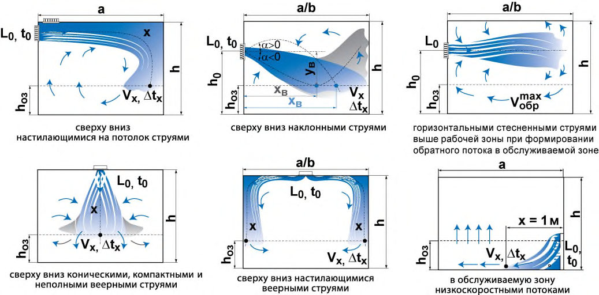
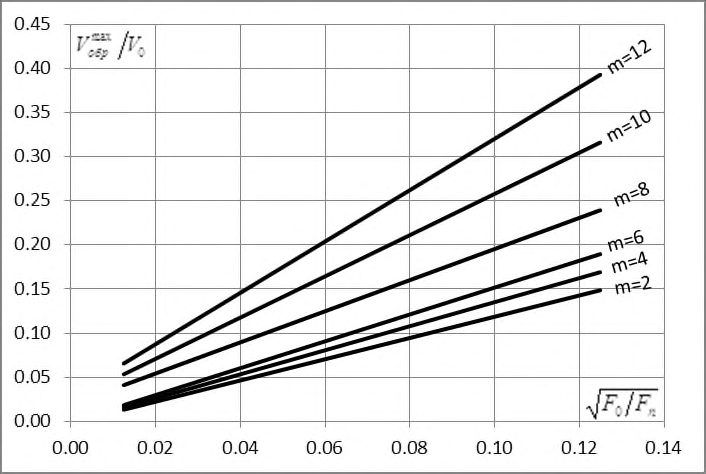

СП 60.13330.2020 «Отопление, вентиляция и кондиционирование в»
О документе: разработчики, утверждение, регистрация, ключевые слова
- 1 ИСПОЛНИТЕЛИ - ФГБУ Научно-исследовательский институт строительной физики российской академии архитектуры и строительных наук (НИИСФ РААСН), НП АВОК
2 ВНЕСЕН Техническим комитетом по стандартизации ТК 465 «Строительство»
- 3 ПОДГОТОВЛЕН к утверждению Департаментом градостроительной деятельности и архитектуры Министерства строительства и жилищно-коммунального хозяйства Российской Федерации (Минстрой России)
- 4 УТВЕРЖДЕН приказом Министерства строительства и жилищно-коммунального хозяйства Российской Федерации от 30 декабря 2020 г. № 921/пр и введен в действие с 1 июля 2021 г.
- 5 ЗАРЕГИСТРИРОВАН Федеральным агентством по техническому регулированию и метрологии (Росстандарт). Пересмотр СП 60.13330.2016 «СНиП 41-01-2003 Отопление, вентиляция и кондиционирование воздуха»
В случае пересмотра (замены) или отмены настоящего свода правил соответствующее уведомление будет опубликовано в установленном порядке. Соответствующая информация, уведомление и тексты размещаются также в информационной системе общего пользования - на официальном сайте разработчика (Минстрой России) в сети Интернет
© Минстрой России, 2020
Настоящий нормативный документ не может быть полностью или частично воспроизведен, тиражирован и распространен в качестве официального издания на территории Российской Федерации без разрешения Министерства строительства и жилищно-коммунального хозяйства Российской Федерации
- 10 Требования к объемно-планировочным и конструктивным решениям………….
- 11 Электроснабжение и автоматизация систем отопления, вентиляции и кондиционирования воздуха………………………………………………………..
- 11.1 Электроснабжение……………………………………………………………..
- 11.2 Автоматизация…………………………………………………………………
- 12 Водоснабжение и канализация систем отопления, вентиляции и кондиционирования воздуха………………………………………………………..
- 13 Требования энергетической эффективности и рационального использования природных ресурсов ………………………………………………………………..
- 14 Требования безопасности и доступности при пользовании. Долговечность и ремонтопригодность…………………………………………………………………
- 15 Порядок проведения монтажа и сдачи в эксплуатацию внутренних систем водоснабжения и водоотведения (включая апробацию, испытания, пуско- наладку и контроль)……………………………………………………………..
- 16 Правила эксплуатации систем отопления, вентиляции и кондиционирования воздуха……………………………………………………………………………….
Приложение А
Расчет тепловых нагрузок на системы отопления и вентиляции…………………………………………………….
Приложение Б
Требования к системам отопления и внутреннего теплоснабжения зданий различного назначения…………
Приложение В
Минимальный расход наружного воздуха на одного человека……………………………………………………….
Приложение Г
Расчет расхода приточного воздуха в центральных системах вентиляции и кондиционирования воздуха ……..
Приложение Д
Допустимая скорость и температура в струе приточного воздуха…………………………………………………………
Приложение Е
Температура и скорость движения воздуха при воздушном душировании…………………………………………………
Приложение Ж
Методика расчета воздухораспределения…………………
Приложение И Допустимая скорость движения тепло- хладоносителя в трубопроводах………………………………………………. Приложение К Металлические воздуховоды (допустимые сечения и толщина металла)………………………………………….. Приложение Л Рекомендуемая скорость движения воздуха в воздуховодах систем вентиляции и кондиционирования…. Приложение М Классы герметичности воздуховодов………………………. Приложение Н Пределы огнестойкости транзитных воздуховодов………. Приложение П Энтальпия и влагосодержание наружного воздуха в теплый период года для расчета систем кондиционирования…………………………………………… Библиография …………………………………………………………………...
Дата введения 2021-07-01
УДК [69+699.8] (083.74)
ОКС 91.140.10, 91.140.30
Ключевые слова: отопление, вентиляция, кондиционирование воздуха, микроклимат помещения, качество воздуха, вторичные энергетические ресурсы, нетрадиционные возобновляемые источники энергии
Введение
Настоящий свод правил разработан в целях обеспечения требований Федерального закона от 30 декабря 2009 г. № 384-ФЗ «Технический регламент о безопасности зданий и сооружений». Кроме того, применение настоящего свода правил обеспечивает соблюдение требований Федеральных законов от 27 декабря 2002 г. № 184-ФЗ «О техническом регулировании», от 22 июля 2008 № 123-ФЗ «Технический регламент о требованиях пожарной безопасности», от 23 ноября 2009 г. № 261-ФЗ «Об энергосбережении и повышении энергетической эффективности и о внесении изменений в отдельные законодательные акты Российской Федерации».
Пересмотр СП 60.13330.2016 «СНиП 41-01-2003 Отопление, вентиляция и кондиционирование воздуха» выполнен авторским коллективом: НИИСФ РААСН (канд. техн. наук Д.Ю. Желдаков, канд. техн. наук А.С. Стронгин ), НП АВОК (д-р техн. наук Ю.А. Табунщиков ), ООО ППФ «АК» ( А.Н. Колубков ), ООО «Пик-Проект» ( И.А. Тищенко ), ООО «Данфосс» (канд. техн. наук В.Л. Грановский ), ООО «ЗВО «ИННОВЕНТ» (канд. техн. наук Ю.Г. Московко ), НИУ МГСУ (канд. техн. наук А.В. Бусахин ), ФГБУ ВНИИПО МЧС России ( Б.Б. Колчев ), ООО «Системэйр» ( В.А. Воронцов, К.А. Кузнецов ).
.
1Область применения
2Нормативные ссылки
В настоящем своде правил использованы нормативные ссылки на следующие документы:
ГОСТ 12.1.003-2014 Система стандартов безопасности труда. Шум. Общие требования безопасности
Издание официальное
Heating, ventilation and air conditioning
СП 60.13330.2020
ГОСТ 12.1.005-88 Система стандартов безопасности труда. Общие санитарногигиенические требования к воздуху рабочей зоны
ГОСТ 12.1.007-76 Система стандартов безопасности труда. Вредные вещества. Классификация и общие требования безопасности
ГОСТ 12.2.233-2012 Система стандартов безопасности труда. Системы холодильные холодопроизводительностью свыше 3,0 кВт. Требования безопасности
ГОСТ 12.4.026-2015 Система стандартов безопасности труда. Цвета сигнальные, знаки безопасности и разметка сигнальная. Назначение и правила применения. Общие технические требования и характеристики. Методы испытаний
ГОСТ 10616-2015 Вентиляторы радиальные и осевые. Размеры и параметры
ГОСТ 15150-69 Машины, приборы и другие технические изделия. Исполнения для различных климатических районов. Категории, условия эксплуатации, хранения и транспортирования в части воздействия климатических факторов внешней среды
ГОСТ 21.602-2016 Система проектной документации для строительства. Правила выполнения рабочей документации отопления, вентиляции и кондиционирования
ГОСТ 22270-2018 Системы отопления, вентиляции и кондиционирования. Термины и определения
ГОСТ 30494-2011 Здания жилые и общественные. Параметры микроклимата в помещениях
ГОСТ 31427-2010 Здания жилые и общественные. Состав показателей энергетической эффективности
ГОСТ 31532-2012 Энергосбережение. Энергетическая эффективность. Состав показателей. Общие положения
ГОСТ 31937-2011 Здания и сооружения. Правила обследования и мониторинга технического состояния
ГОСТ 31961-2012 Вентиляторы промышленные. Показатели энергетической эффективности
ГОСТ 33660-2015 Вентиляторы. Классификация по эффективности (ISO 12759:2010)
ГОСТ 34060-2017 Инженерные сети зданий и сооружений внутренние. Испытание и наладка систем вентиляции и кондиционирования воздуха. Правила проведения и контроль выполнения работ
ГОСТ Р 51571-2000 Компенсаторы и уплотнения сильфонные металлические. Общие технические требования
ГОСТ Р 52539-2006 Чистота воздуха в лечебных учреждениях. Общие требования ГОСТ Р 53306-2009 Узлы пересечения ограждающих строительных конструкций трубопроводами из полимерных материалов. Метод испытаний на огнестойкость
ГОСТ Р 53299-2013 Воздуховоды. Методы испытаний на огнестойкость
ГОСТ Р 53300-2009 Противодымная защита зданий и сооружений. Методы приемосдаточных и периодических испытаний
ГOCT EN 378-1-2014 Системы холодильные и тепловые насосы. Требования безопасности и охраны окружающей среды Часть 1. Основные требования, определения, классификация и критерии выбора
ГOCT EN 378-3-2014 Системы холодильные и тепловые насосы. Требования безопасности и охраны окружающей среды Часть 3. Размещение оборудования и защита персонала
ГОСТ Р ИСО 27327-1-2012 Вентиляторы. Агрегаты воздушной завесы. Часть 1. Лабораторные методы испытаний для оценки аэродинамических характеристик
СП 2.13130.2020 Системы противопожарной защиты. Обеспечение огнестойкости объектов защиты
СП 7.13130.2013 Отопление, вентиляция и кондиционирование. Требования пожарной безопасности (с изменениями № 1, № 2)
СП 12.13130.2009 Определение категорий помещений, зданий и наружных установок по взрывопожарной и пожарной опасности (с изменением № 1)
СП 20.13330.2016 «СНиП 2.01.07-85* Нагрузки и воздействия» (с изменениями № 1, № 2)
СП 48.13330.2019 «СНиП 12-01-2004 Организация строительства»
СП 50.13330.2012 «СНиП 23-02-2003 Тепловая защита зданий» (с изменением № 1)
СП 51.13330.2011 «СНиП 23-03-2003 Защита от шума» (с изменением № 1)
СП 54.13330.2016 «СНиП 31-01-2003 Здания жилые многоквартирные» (с изменениями № 1, № 2, № 3)
СП 56.13330.2011 «СНиП 31-03-2001 Производственные здания» (с изменениями № 1, № 2, № 3)
СП 61.13330.2012 «СНиП 41-03-2003 Тепловая изоляция оборудования и трубопроводов» (с изменением № 1)
СП 62.13330.2011 «СНиП 42-01-2002 Газораспределительные системы» (с изменениями № 1, № 2, № 3)
СП 73.13330.2016 «СНиП 3.05.01-85 Внутренние санитарно-технические системы зданий» (с изменением № 1)
СП 118.13330.2012 «СНиП 31-06-2009 Общественные здания и сооружения» (с изменениями № 1, № 2, № 3, № 4)
СП 131.13330.2018 «СНиП 23-01-99* Строительная климатология»
СП 134.13330.2012 Системы электросвязи зданий и сооружений. Основные положения проектирования (с изменениями № 1, № 2)
СП 230.1325800.2015 Конструкции ограждающие зданий. Характеристики теплотехнических неоднородностей (с изменением № 1)
СП 253.1325800.2016 Инженерные системы высотных зданий
СП 336.1325800.2017 Системы вентиляции и кондиционирования воздуха. Правила эксплуатации
СП 347.1325800.2017 Внутренние системы отопления, горячего и холодного водоснабжения. Правила эксплуатации
СП 402.1325800.2018 Здания жилые. Правила проектирования систем газопотребления
СП 484.1311500.2020 Системы противопожарной защиты. Системы пожарной сигнализации и автоматизация систем противопожарной защиты. Нормы и правила проектирования
- СанПиН 2.1.3.2630-10 Санитарно-эпидемиологические требования к организациям, осуществляющим медицинскую деятельность
- СанПиН 2.1.4.1074-01 Питьевая вода. Гигиенические требования к качеству воды центральных систем питьевого водоснабжения. Контроль качества
СанПиН 2.2.4.548-96 Гигиенические требования к микроклимату производственных помещений
СанПиН 2.4.1.3049-2013 Санитарно-эпидемиологические требования к устройству, содержанию и организации режима работы дошкольных образовательных организаций
Примечание - При пользовании настоящим сводом правил целесообразно проверить действие ссылочных документов в информационной системе общего пользования -на официальном сайте федерального органа исполнительной власти в сфере стандартизации в сети Интернет или по ежегодному указателю «Национальные стандарты», который опубликован по состоянию на 1 января текущего года, и по выпускам ежемесячного информационного указателя «Национальные стандарты» за текущий год. Если заменен ссылочный документ, на который дана недатированная ссылка, то рекомендуется использовать действующую версию этого документа с учетом всех внесенных в данную версию изменений. Если заменен ссылочный документ, на который дана датированная ссылка, то рекомендуется использовать версию этого документа с указанным выше годом утверждения (принятия). Если после утверждения настоящего свода правил в ссылочный документ, на который дана датированная ссылка, внесено изменение, затрагивающее положение, на которое дана ссылка, то это положение рекомендуется применять без учета данного изменения. Если ссылочный документ отменен без замены, то положение, в котором дана ссылка на него, рекомендуется применять в части, не затрагивающей эту ссылку. Сведения о действии сводов правил целесообразно проверить в Федеральном информационном фонде стандартов.
3Термины, определения и сокращения
- 3.1.1 автономный источник теплоты
- Источник генерации теплоты для одного или ограниченного числа потребителей, связанных между собой на технологической или организационно-правовой основе.
- 3.1.2 вентиляция
- Обмен воздуха в помещениях для удаления избытка теплоты, влаги и вредных веществ с целью обеспечения допустимого микроклимата и качества воздуха в обслуживаемом помещении или рабочей зоне.
- 3.1.3 вентиляционный коллектор
- Участок сборного воздуховода, к которому присоединяются воздуховоды из двух или большего числа этажей либо воздухоприточные или воздухозаборные устройства на двух и более этажах.
- 3.1.4 вентиляционная шахта
- Строительная конструкция, внутри которой может быть расположен один или несколько воздуховодов и предназначенная для забора наружного (воздухозаборная) или выброса отработанного (вытяжная) воздуха системы вентиляции.
- 3.1.5 верхняя зона помещения
- Зона помещения, расположенная выше обслуживаемой или рабочей зоны.
- 3.1.6 воздушный затвор (спутник)
- Вертикальный участок воздуховода, препятствующий изменению направления движения воздуха и его перетеканию из одной квартиры в другую, а при пожаре прониканию дыма из нижерасположенных этажей в вышерасположенные. 3.1.7 газовый инфракрасный излучатель; ГИИ:
- 3.1.7.1 светлый
- С открытой атмосферной горелкой без организованного отвода продуктов горения и температурой излучающей поверхности более 600 °С.
- 3.1.7.2 темный
- С вентиляторным газогорелочным блоком, отводом продуктов горения за пределы помещения и температурой излучающей поверхности менее 600 °С.
- 3.1.8 герметичность (воздухонепроницаемость) воздуховода
- Величина допустимой утечки/подсоса воздуха через материал воздуховода, соединения, устройства или оборудования вентиляционной системы.
- 3.1.9 гидравлическая и тепловая устойчивость систем отопления, теплоснабжения
- Способность системы поддерживать заданное расчетное распределение расхода теплоносителя при изменении расхода и теплоотдачи по всем отдельным участкам, отопительным приборам и другим элементам системы.
- 3.1.10 дисбаланс воздухообмена
- Разность расходов воздуха, подаваемого в помещение (здание) и удаляемого из него системами вентиляции, кондиционирования и воздушного отопления с механическим побуждением.
- 3.1.11 защищаемое помещение
- Помещение, при входе в которое для предотвращения перетекания воздуха имеется тамбур-шлюз или создается повышенное или пониженное давление воздуха по отношению к смежным помещениям.
- 3.1.12 зона дыхания
- Пространство радиусом 0,5 м от лица человека.
- 3.1.13 избытки теплоты
- Разность тепловых потоков, поступающих в помещение и уходящих из него, ассимилируемых системами вентиляции и кондиционирования воздуха.
- 3.1.14 кондиционирование воздуха
- Автоматическое поддержание в закрытых помещениях всех или отдельных параметров воздуха (температуры, относительной влажности, чистоты, скорости движения) для обеспечения, главным образом, оптимальных параметров микроклимата, наиболее благоприятных для самочувствия людей, ведения технологического процесса, обеспечения сохранности ценностей.
- 3.1.15 местный отсос
- Устройство для улавливания вредных и взрывоопасных газов, пыли, аэрозолей и паров (зонт, бортовой отсос, вытяжной шкаф, кожух-воздухоприемник и т.п.) у мест их образования (станок, аппарат, ванна, рабочий стол, камера, шкаф и т.п.), присоединяемое к воздуховодам систем местных отсосов и являющееся, как правило, составной частью технологического оборудования.
- 3.1.16 отопление
- Поддержание в закрытых помещениях нормируемой температуры со средней необеспеченностью 50 ч/год.
- 3.1.17 помещение и зоны без естественного проветривания
- Помещение без открываемых окон или проемов в наружных стенах или зоны помещения с открываемыми окнами (проемами) в наружных стенах, расположенных на расстоянии от внутренних стен, превышающем пятикратную высоту помещения.
- 3.1.18 помещение, не имеющее выделений вредных веществ
- Помещение, в котором из технологического и другого оборудования частично выделяются в воздух вредные вещества в количествах, не создающих (в течение смены) концентраций, превышающих ПДК в воздухе рабочей зоны.
- 3.1.19 постоянное рабочее место
- Место, где люди работают более 2 ч непрерывно или более 50 % рабочего времени.
- 3.1.20 рекуперация тепла вытяжного воздуха
- Повторное использование тепла воздуха, удаляемого из помещения (здания).
- 3.1.21 рециркуляция воздуха
- Смешение воздуха из помещения с наружным воздухом и подача этой смеси в это же или другие помещения (после очистки или тепловлажностной обработки) или перемешивание воздуха в пределах одного помещения, сопровождаемое очисткой, нагреванием (охлаждением) его отопительными агрегатами, вентиляторными и эжекционными доводчиками, вентиляторами-веерами и др.
- 3.1.22 сильфонный компенсатор
- Устройство, обеспечивающее компенсацию удлинения трубопровода (при нагревании или охлаждении трубопровода) вдоль его оси.
- 3.1.23 система вентиляции
- Комплекс функционально связанных между собой оборудования, установок, устройств, воздуховодов, осуществляющих обмен воздуха в помещениях для удаления избытков теплоты, влаги, вредных веществ с целью обеспечения допустимых метеорологических условий и чистоты воздуха в обслуживаемой или рабочей зоне помещения.
- 3.1.24 система внутреннего теплоснабжения здания
- Система, обеспечивающая трансформацию, распределение и подачу теплоты (теплоносителя) теплопотребляющим установкам (оборудованию) систем отопления, вентиляции, кондиционирования и горячего водоснабжения здания.
- 3.1.25 система децентрализованного теплоснабжения
- Система, в которой источник теплоты и теплоприемники потребителей либо совмещены в одном агрегате, либо размещены столь близко, что передача теплоты от источника до теплоприемников может осуществляться практически без промежуточного звена - тепловой сети.
- 3.1.26 система местных отсосов
- Система местной вытяжной вентиляции, к воздуховодам которой присоединяют местные отсосы.
- 3.1.27 система отопления
- Совокупность взаимосвязанных конструктивных элементов, предназначенных для получения, переноса и передачи теплоты в обогреваемые помещения здания.
- 3.1.28 система холодоснабжения
- Комплекс оборудования и устройств для производства холода и подачи его в воздухоохладители приточных установок и кондиционеров.
- 3.1.29 система централизованного теплоснабжения
- Система, в которой источник производства тепловой энергии работает на теплоснабжение группы зданий и связан тепловыми сетями с потребителями теплоты. Примечание - Система состоит из источника тепловой энергии, тепловой сети, теплового пункта (ЦТП/ИТП) или абонентских вводов и местных систем потребителей теплоты.
- 3.1.30 схема непосредственного охлаждения
- Схема охлаждения, в которой воздух кондиционируемого помещения охлаждается в теплообменнике рабочим телом (хладагентом) холодильной машины.
- 3.1.31 схема промежуточного охлаждения
- Схема охлаждения, в которой воздух кондиционируемого помещения охлаждается в теплообменнике промежуточным теплоносителем, циркулирующим в замкнутом контуре, а охлаждение промежуточного теплоносителя осуществляется в теплообменнике рабочим телом (хладагентом) холодильной машины.
- 3.1.32 эксплуатируемая (рабочая) зона
- Пространство определенного объема в помещении, в котором предусмотрено нахождение людей и заданы требования к параметрам воздушной среды. 3.2 В настоящем своде правил применены следующие сокращения: АИТ - автономный источник теплоты; АРМ - автоматизированное рабочее место; ВБР - вероятность безотказной работы; ВИЭ - возобновляемые источники энергии; ВР - воздухораспределительное устройство; ВТЗ - воздушно тепловая завеса; ВЭР - вторичные энергоресурсы; ГИИ - газовый инфракрасный излучатель; ГРЩ - главный распределительный щит; ИТП - индивидуальный тепловой пункт; НВИЭ - невозобновляемые источники энергии; НКПРП - нижний концентрационный предел распространения пламени; ПДК - предельно допустимая концентрация; ППНЧ - практический предел концентрации хладагента при нахождении человека в помещении; РТС - районная тепловая станция; РУ - распределительное устройство; ТП - трансформаторная подстанция; ТСТ - теплонасосная система теплохладоснабжения; ТЭЦ - теплоэлектроцентраль; ЦТП - центральный тепловой пункт.
4Общие положения
Для общественных зданий высотой более 50 м и жилых зданий высотой более 75 м требования настоящего свода правил применяются совместно с СП 253.1325800 в области проектирования инженерных систем высотных зданий.
СП 60.13330.2020
2.1.3.2630, СанПиН 2.4.1.3049, [6], [7] и требованиям настоящего свода правил; б) требуемые параметры микроклимата и концентрацию вредных веществ в воздухе в рабочей зоне производственных, лабораторных и складских (далее -производственных) помещений в зданиях любого назначения согласно ГОСТ 12.1.005, СанПиН 2.2.4.548, [10] и требованиям настоящего свода правил; в) взрыво- пожаробезопасность систем внутреннего тепло- и холодоснабжения, отопления, вентиляции и кондиционирования воздуха; г) допустимые уровни шума и вибраций в зданиях при работе оборудования и систем теплои холодоснабжения, отопления, вентиляции и кондиционирования (далее -отопительно-вентиляционного оборудования) согласно СП 51.13330.
Примечание - Для систем аварийной вентиляции при работе или опробовании в помещениях, где установлено это оборудование, допускается согласно ГОСТ 12.1.003 источник шума не более 110 дБА постоянной звуковой мощности, а импульсный шум - не более 125 дБА звуковой мощности;
- д) требуемое качество воздуха согласно ГОСТ 30494;
- е) заданную чистоту воздуха в чистых помещениях;
- ж) охрану атмосферного воздуха от вентиляционных выбросов вредных веществ;
- и) повышение энергетической эффективности инженерных систем зданий; к) сокращение расхода не возобновляемых природных ресурсов при строительстве и эксплуатации; л) доступность и ремонтопригодность систем внутреннего тепло- холодоснабжения, отопления, вентиляции и кондиционирования воздуха.
5. Расчетные параметры внутреннего и наружного воздуха
Если допустимые параметры микроклимата невозможно обеспечивать в рабочей или обслуживаемой зоне по производственным или экономическим условиям, то на постоянных рабочих местах следует предусматривать душирование воздухом с учетом 5.9, 7.1.17 и приложения Е, применять охлаждающие или греющие панели, местные кондиционеры, передвижные установки и т.п.
Параметры микроклимата (или один из параметров) допускается принимать в пределах оптимальных значений вместо допустимых по техническому заданию или экономическому обоснованию.
СП 60.13330.2020 для которых параметры воздуха установлены другими нормативными документами), когда они не используются, в нерабочее время и при устранении аварий на системе теплоснабжения, следует поддерживать температуру воздуха не ниже:
15 °C - в жилых помещениях;
12 °C - в помещениях общественных и административно-бытовых зданий;
5 °C - в производственных помещениях.
Примечание -Не допускается применение в системах отопления многоквартирных жилых зданий устройств, позволяющих пользователям уменьшать температуру ниже указанной.
В теплый период года параметры микроклимата не регламентируются в жилых помещениях, а также общественных, административно-бытовых и производственных помещениях в периоды, когда они не используются, и в нерабочее время, при отсутствии технологических требований к температурному режиму помещений.
Один из параметров микроклимата допускается принимать в пределах допустимых значений вместо оптимальных по заданию на проектирование.
Для дошкольных образовательных организаций, больниц и поликлиник следует принимать оптимальные показатели качества воздуха.
Для жилых и общественных зданий следует принимать допустимые показатели качества воздуха; оптимальные показатели воздуха для указанных зданий необходимо принимать по заданию на проектирование.
12 5.5 Для производственных помещений с полностью автоматизированным технологическим оборудованием, функционирующим без присутствия людей (кроме
СП 60.13330.2020 дежурного персонала, находящегося в специальном помещении и выходящего в производственное помещение периодически для осмотра и наладки оборудования не более 2 ч непрерывно), при отсутствии технологических требований к температурному режиму помещений температуру воздуха в рабочей зоне следует принимать: а) в холодный период года и переходные условия при отсутствии избытков теплоты плюс 10 °C, а при наличии избытков теплоты - экономически целесообразную температуру; б) в теплый период года при отсутствии избытков теплоты - равную температуре наружного воздуха (параметры А), а при наличии избытков теплоты - на 4 °C выше температуры наружного воздуха (параметры А), но не выше 29 °C.
В местах производства ремонтных (кроме аварийных) работ (продолжительностью 2 ч и более непрерывно) следует обеспечивать передвижными установками параметры воздуха:
- минимально допустимые в холодный период года согласно 5.1, перечисление б);
- максимально допустимые в теплый период года согласно 5.1.
Относительная влажность и скорость движения воздуха в производственных помещениях с полностью автоматизированным технологическим оборудованием при отсутствии специальных требований не регламентируются.
СП 60.13330.2020 воздуха в обслуживаемой (рабочей) зоне помещения.
Результирующая температура воздуха в обслуживаемой или рабочей зоне должна быть не менее чем на 1 °C ниже максимально допустимой температуры в холодный период года и не должна быть ниже минимально допустимой температуры в холодный период года более чем на 3 °C для общественных и на 4 °C для производственных помещений.
При тепловом облучении работающих температура воздуха на рабочих местах не должна превышать: 25 °C -при категории работ Iа; 24 °C - Iб; 22 °C - IIа; 21 - IIб; 20 °C - III.
Для предупреждения неблагоприятного воздействия инфракрасного излучения на организм человека интенсивность теплового облучения при отоплении и обогреве должна быть не выше величин, указанных в СанПиН 2.2.4.548:
15 Вт/м² -на поверхности незащищенных участков головы при температуре воздуха, соответствующей нижней границе допустимых величин;
25 Вт/м² -на поверхности туловища, рук и ног человека при температуре воздуха, соответствующей нижней границе оптимальных величин;
50 Вт/м² -на поверхности туловища, рук и ног человека при температуре воздуха, соответствующей нижней границе допустимых величин.
Максимальная интенсивность инфракрасного облучения поверхности туловища, рук и ног не должна превышать 140 Вт/м² на постоянных и 250 Вт/м² на непостоянных рабочих местах. При этом облучению не должно подвергаться более 25 % поверхности тела и обязательно применение средств индивидуальной защиты, в том числе средств защиты лица и глаз.
СП 60.13330.2020
- чистоты воздуха соответствующего класса согласно ГОСТ Р 52539, принятого по заданию на проектирование;
- параметров воздуха в пределах оптимальных норм по 5.3 или по заданию на проектирование.
Величину удельной энтальпии и влагосодержания наружного воздуха в теплый период года (параметры Б) следует принимать по приложению П (для систем кондиционирования представленных городов), а для других населенных пунктов -принимать максимальной из указанных для данного климатического района по приложению А СП 131.13330.2018 (рисунок А.6).
Параметры наружного воздуха для переходных условий года следует принимать: температуру 10 °C и удельную энтальпию 26,5 кДж/кг или параметры наружного воздуха, при которых изменяются режимы работы оборудования, потребляющего тепло и холод.
6Внутренние системы теплоснабжения и отопления
6.1Системы теплоснабжения
- по тепловым сетям централизованной системы теплоснабжения от источника теплоты (ТЭЦ, РТС, отдельно стоящие котельные);
- от индивидуальных теплогенераторов децентрализованной системы теплоснабжения;
- от АИТ, обслуживающего одно здание или группу зданий (встроенная, пристроенная или крышная котельная, когенерационная или ТСТ);
- от комбинированного источника теплоты - гибридные теплонасосные системы теплохладоснабжения, работающие совместно с централизованной или децентрализованной системой теплоснабжения);
- от автономного теплогенератора, обслуживающего квартиры одного подъезда многоквартирного жилого дома с каскадной схемой включения.
Системы внутреннего теплоснабжения и отопления допускается присоединять по зависимой схеме:
- при централизованном теплоснабжении производственных и административнобытовых зданий;
- при теплоснабжении зданий от автономного источника теплоты.
При отсутствии такой возможности, допускается устройство пристроенных или отдельно стоящих тепловых пунктов при обосновании и по заданию на проектирование.
Высоту помещений от отметки чистого пола до низа выступающих конструкций перекрытия (в свету) рекомендуется принимать не менее: для наземных ЦТП -4,2 м; для подземных - 3,6 м; для ИТП -2,2 м. При размещении ИТП в подвальных и цокольных помещениях, а также в технических подпольях зданий допускается принимать высоту помещений и свободных проходов к ним не менее 1,8 м.
В ИТП следует размещать общедомовой узел учета тепловой энергии, измеряющий суммарное теплопотребление зданием и водомер холодной воды, направляемой на горячее водоснабжение.
При подключении группы многоквартирных жилых домов через ЦТП/ИТП, автоматическое регулирование подачи теплоты в системы внутреннего теплоснабжения и отопления этих домов должно осуществляться в каждом доме (части дома) в автоматизированном узле управления системами отопления и внутреннего теплоснабжения.
В одном здании для групп помещений разного назначения или групп помещений, предназначенных для разных арендаторов (владельцев), по заданию на проектирование следует предусматривать индивидуальные узлы учета расхода тепла.
В комплексе многоквартирных зданий с единым ЦТП необходимость устройства коммерческого учета тепла потребляемого каждым зданием должна быть обоснована либо принята по техническому заданию.
Допускается применять антифризы, содержащие вещества 3 класса опасности по ГОСТ 12.1.007 при условии их соответствия санитарно-гигиеническим требованиям.
При применении полимерных труб в качестве добавок к воде не следует использовать вещества, к которым материал труб не является химически стойким.
Непосредственная трансформация электрической энергии в тепловую энергию (прямой электронагрев) для отопления, нагрева воздуха в воздухонагревателях или в воздушно-тепловых завесах (кроме взрыво- пожароопасных помещениях категорий А и Б) допускается (с учетом ограничений, установленных приложением Б) при соответствующем технико-экономическом обосновании и по заданию на проектирование.
- в жилых и общественных зданиях и комплексах не более 95 °C;
- для производственных не более 115 °C.
6.2Системы отопления
Системы отопления должны обеспечивать в отапливаемых помещениях нормируемую температуру воздуха согласно разделу 5 в течение отопительного периода при расчетных параметрах наружного воздуха.
- потери теплоты через ограждающие конструкции;
- расход теплоты на нагревание наружного воздуха, проникающего в помещения за счет инфильтрации или путем организованного притока через оконные клапаны, форточки, фрамуги и другие устройства для вентиляции помещений в объеме нормативного воздухообмена, если в этих помещениях не предусмотрена механическая приточная вентиляция;
- расход теплоты на нагревание материалов, оборудования и транспортных средств;
- тепловой поток, регулярно поступающий от электрических приборов, освещения, технологического оборудования, трубопроводов, людей и других источников тепла.
Потери теплоты через внутренние ограждающие конструкции помещений допускается не учитывать, если разность температур воздуха в этих помещениях не превышает 3 °C.
СП 60.13330.2020
Отопление лестничных клеток допускается не предусматривать:
- в незадымляемых лестничных клетках типа Н1;
- для зданий, оборудуемых системами квартирного отопления, а также для зданий с любыми системами отопления в районах с расчетной температурой наружного воздуха для холодного периода года минус 5 С и выше (параметры Б).
В неотапливаемых лестничных клетках необходимо предусматривать мероприятия по предотвращению образования наледи на ступенях лестничных маршей и площадок.
- воздушное отопление по приложению Б;
- другие системы отопления по приложению Б, за исключением систем водяного отопления для помещений, в которых хранятся или применяются вещества, образующие при контакте с водой или водяными парами взрывоопасные смеси, или вещества, способные к самовозгоранию или взрыву при взаимодействии с водой.
- в стояках однотрубных систем и приборных узлах вертикальных двухтрубных систем -не менее 70 % общих потерь давления в циркуляционных кольцах без учета потерь давления в общих участках;
- в стояках однотрубных систем отопления с нижней разводкой подающей и верхней разводкой обратной магистрали -не менее 300 Па на каждый метр высоты стояка;
- в двухтрубных вертикальных и однотрубных горизонтальных системах отопления в циркуляционных кольцах через верхние приборы (ветви) -не менее естественного давления в них при расчетных параметрах теплоносителя.
Располагаемую разность давления воды в подающем и обратном трубопроводах для циркуляции воды в системе отопления следует определять с учетом давления, возникающего при охлаждении воды в трубах и отопительных приборах.
Неучтенные потери циркуляционного давления в системе отопления следует принимать равными 10 % максимальных потерь давления.
Невязка потерь давления в циркуляционных кольцах (без учета потерь давления в общих участках), не должна превышать 5 % при попутной и 15 % при тупиковой разводках трубопроводов.
- регуляторов перепада давлений в двухтрубных системах отопления;
- регуляторов расхода в однотрубных системах отопления, независимо от методов их расчета.
В конструкции балансировочных клапанов должна быть предусмотрена возможность измерений расходов и (или) перепадов давления с помощью специальных приборов.
На распределительных поэтажных гребенках в системах поквартирного отопления жилых зданий не допускается применять устройства, позволяющие осуществлять перепуск теплоносителя из подающего в обратный трубопроводы систем отопления.
Для систем отопления с постоянным расходом теплоносителя (без термостатов и других регулирующих устройств) допускается установка ручных балансировочных клапанов с монтажной позицией предварительной установки, соответствующей данным гидравлического расчета.
При расчете поверхности отопительных приборов следует учитывать тепловой поток, поступающий от трубопроводов системы отопления в помещение при открытой прокладке.
- на открытых площадках;
- в производственных помещениях категорий В2, В3, В4, Г и Д (без выделения горючей пыли и аэрозолей класса функциональной пожарной опасности Ф5.1;
- в помещениях складов (без выделения горючей пыли и аэрозолей) категорий В2, В3, В4, Д класса Ф5.2 (кроме книгохранилищ, архивов, высокостеллажных складов);
- в стоянках автомобилей категорий В2, В3 -темные инфракрасные излучатели по заданию на проектирование;
- в помещениях сельскохозяйственных зданий класса Ф5.3 (кроме светлых инфракрасных излучателей);
- в помещениях зрелищных и культурно-просветительных учреждений класса Ф2.3 (театры, кинотеатры, концертные залы, спортивные сооружения с трибунами), класса Ф2.4 (музеи, выставки, танцевальные залы), расположенных на открытом воздухе;
- в помещениях физкультурно-оздоровительных комплексов и спортивнотренировочных учреждений (без трибун для зрителей) класса Ф3.6.
- в помещениях подвальных и цокольных этажей;
- в зданиях V степени огнестойкости;
- во взрывоопасных зонах производственных помещений и складов;
- в помещениях стоянки и ремонта автомобильной техники, работающей на природном газе;
- в зданиях любой степени огнестойкости классов конструктивной пожарной опасности С1, С2 и С3.
На каждом стояке следует предусматривать арматуру со штуцерами для присоединения шлангов для спуска воды или удаления воздуха. В горизонтальных системах отопления следует предусматривать устройства для их опорожнения на каждом этаже независимо от этажности здания.
В горизонтальных системах отопления с полимерными трубами допускается использовать вместо спуска воды продувку системы сжатым воздухом через специальную арматуру на поэтажных (поквартирных) распределителях или отдельных ветках системы.
В системах водяного отопления для выпуска воздуха следует предусматривать проточные воздухосборники или краны. Непроточные воздухосборники допускается применять при скорости движения воды в трубопроводе менее 0,1 м/с.
6.3Трубопроводы
Не следует в одном контуре использовать элементы системы, выполненные из меди и алюминиевых сплавов.
Не допускается использование бывших в употреблении и восстановленных стальных труб, материалов и арматуры в проектной документации на строительство, реконструкцию и капитальный ремонт зданий и сооружений повышенного и нормального уровней ответственности.
Примечания
1 При выборе полимерных трубопроводов следует учитывать долговечность труб при заявленных параметрах пользования.
2 Не допускается применение полимерных трубопроводов в системах отопления с элеваторным присоединением.
3 Не допускается применение полимерных трубопроводов в системах отопления без реализации дополнительных мероприятий, исключающих механическое и термическое повреждение труб, а также прямое воздействие на них ультрафиолетового излучения.
При зависимом присоединении систем внутреннего теплоснабжения к тепловой сети, а также при использовании существующих трубопроводов из стальных труб (согласно 4.4), эквивалентную шероховатость, следует принимать не менее 0,5 мм для воды, пара и других теплоносителей и 1,0 мм для конденсата.
Эквивалентную шероховатость внутренней поверхности труб из полимерных материалов, а также медных и латунных труб следует принимать не менее 0,01 и 0,11 мм соответственно.
Допускается прокладка транзитных трубопроводов без разъемных соединений в защитном кожухе через электротехнические помещения, пешеходные галереи и тоннели.
СП 60.13330.2020 б) в системах высокого давления (от 70 до 170 кПа на вводе) при попутном движении пара и конденсата - 80 м/с, при встречном - 60 м/с.
Во всех низших точках трубопроводов должна предусматриваться установка спускных кранов для возможности опорожнения системы. Во всех высших точках должна предусматриваться установка воздухоотводчиков или кранов для возможности выпуска воздуха.
- из стальных труб - 0,25 м/с и более;
- из медных и полимерных труб - 0,1 м/с и более.
На указанных трубопроводах необходимо предусматривать дополнительные штуцеры, направленные вверх со стороны, противоположной расположению спускного крана на данном участке, для возможности подключения компрессора для продувки трубопроводов сжатым воздухом при проведении ремонтных работ.
В горизонтальных поквартирных системах отопления допускается прокладка трубопроводов без уклона.
6.4Отопительные приборы и арматура
- радиаторы секционные или панельные одинарные;
- гладкие трубы или отопительные панели.
Шкафы для коммуникаций допускается предусматривать выступающими из стен при сохранении нормативной ширины пути эвакуации и обозначении выступающих конструкций в соответствии с ГОСТ 12.4.026.
Длину отопительного прибора следует определять расчетом и принимать максимально возможной для перекрытия ширины светового проема (окна) в медицинских организациях, дошкольных образовательных организациях, общеобразовательных организациях, домах-интернатах для престарелых и инвалидов.
В поквартирных системах отопления отопительные приборы следует подключать к разводящим полимерным трубопроводам через специальную гарнитуру и фитинги. Не допускается открытая прокладка подводок из полимерных трубок без защиты от механических повреждений к гарнитуре подключения.
При открытой прокладке полимерных труб для их защиты от механических повреждений следует предусматривать специальные плинтусы, короба и т.п. конструкции, позволяющие обеспечивать, при необходимости, доступ к трубам и местам их соединений.
Отопительные приборы не следует размещать:
- в отсеках тамбуров, имеющих наружные двери;
- на лестничных клетках, в том числе незадымляемых, если отопительные приборы выступают от плоскости стен на высоте менее 2,2 м от поверхности проступей и площадок лестницы.
Отопительные приборы на лестничной клетке следует присоединять к отдельным ветвям или стоякам систем отопления.
В жилых и общественных зданиях у отопительных приборов следует устанавливать автоматические терморегуляторы.
При применении декоративных экранов или при неудобном доступе к отопительным приборам терморегуляторы должны иметь термоголовку с выносным датчиком.
В помещениях, где имеется опасность замерзания теплоносителя, регулирующая арматура у отопительных приборов должна быть защищена от ее несанкционированного закрытия.
Регулирующую арматуру для отопительных приборов однотрубных систем отопления следует принимать с минимальным гидравлическим сопротивлением, а для приборов двухтрубных систем - с повышенным сопротивлением.
Температуру поверхности высокотемпературных приборов лучистого отопления не следует принимать выше 250 °С.
7Вентиляция, кондиционирование воздуха и воздушное отопление
7.1Общие положения
Системы вентиляции и кондиционирования воздуха должны обеспечивать подачу в помещения воздуха с содержанием вредных веществ, не превышающим предельно допустимых концентраций для таких помещений или для рабочей зоны производственных помещений.
В проектной документации здания или сооружения с помещениями с пребыванием людей должны быть предусмотрены меры по:
- ограничению проникновения в помещения пыли, влаги, вредных и неприятно пахнущих веществ из атмосферного воздуха;
- обеспечению воздухообмена, достаточного для своевременного удаления вредных веществ из воздуха и поддержания химического состава воздуха в пропорциях, благоприятных для жизнедеятельности человека;
- предотвращению проникновения в помещения с постоянным пребыванием людей вредных и неприятно пахнущих веществ, а также выхлопных газов из встроенных стоянок автомобилей.
7.1.2 Кондиционирование воздуха следует принимать:
- для обеспечения параметров микроклимата и качества воздуха в пределах оптимальных значений;
- для обеспечения параметров микроклимата и качества воздуха в пределах допустимых значений, если они не могут быть обеспечены вентиляцией в теплый период года без применения искусственного охлаждения воздуха;
- для обеспечения параметров микроклимата и качества воздуха, требуемых для технологического процесса, по заданию на проектирование.
Для жилых и общественных зданий, при наличии технической возможности, следует выполнять центральные системы кондиционирования. По техническому заданию допускается применение децентрализованных и индивидуальных систем кондиционирования с расположением их элементов на фасадах зданий.
Примечание - При кондиционировании скорость движения воздуха в обслуживаемой или рабочей зоне помещений (на постоянных и непостоянных рабочих местах) допускается принимать в пределах допустимых значений по техническому заданию.
- если параметры микроклимата и качество воздуха не обеспечиваются вентиляцией с естественным побуждением в течение года;
- для помещений и зон без естественного проветривания.
- с централизованными приточными и вытяжными установками с подачей приточного подготовленного наружного воздуха и поддержанием заданной температуры приточного воздуха;
- с индивидуальными поквартирными приточно-вытяжными установками;
- с индивидуальными приточными покомнатными установками (бризерами).
- со специальными открываемыми конструкциями (клапанами) для обеспечения притока воздуха в ограждающих конструкциях или окнах и удалением воздуха с использованием механического побуждения;
- с естественным притоком и удалением воздуха.
При этом устройство систем вентиляции должно исключать поступление воздуха из одной квартиры в другую.
С целью экономии топливно-энергетических ресурсов для жилых помещений многоквартирных жилых домов рекомендуется предусматривать механическую приточновытяжную вентиляцию с рекуперацией тепла удаляемого воздуха.
При использовании гибридных систем вентиляции с естественным притоком и удалением воздуха в холодный и переходный периоды и с механическим побуждением воздухообмена в теплый период года вентиляторы таких систем рекомендуется принимать с поддержанием расчетного разряжения на всасывающем патрубке за счет применения регулируемого привода для возможности использования естественного побуждения в переходный и холодный периоды года.
Установку систем вентиляции следует выполнять с учетом требований 7.2, 7.10, не допуская размещения установок непосредственно над, под и смежно с жилыми помещениями и с обеспечением нормативных уровней шума и вибраций в жилых помещениях.
- применения индивидуальных поквартирных приточно-вытяжных установок с рекуперацией тепла вытяжного воздуха;
- устройства спутников, подключаемых к сборному воздуховоду, расположенному в межквартирном коридоре под потолком вышележащего этажа по 7.11.18;
При устройстве общего сборного вертикального воздуховода рекомендуется устройство самостоятельных спутников для санузлов и кухонь.
- помещений категорий А и Б;
- помещений с выделением вредных газов, паров или аэрозолей 1-го и 2-го классов опасности.
Устройство общего тамбур-шлюза для двух и более помещений категорий А и Б не допускается.
В плавильных, литейных, прокатных и других горячих цехах допускается душирование рабочих мест внутренним воздухом аэрируемых пролетов этих цехов с охлаждением или без охлаждения воздуха.
- на постоянные рабочие места при открытых технологических процессах, сопровождающихся выделением вредных веществ, и невозможности устройства укрытия или местной вытяжной вентиляции;
- между помещениями, в одном из которых выделяются вредные вещества.
7.2Системы вентиляции, кондиционирование воздуха и воздушного отопления
Помещения одной категории по взрывопожарной опасности, не разделенные противопожарными преградами, а также имеющие открытые проемы общей площадью более 1 м² в другие помещения, допускается рассматривать как одно помещение.
(раздельно или последовательно расположенных) этажах; г) производственных одной из категорий В1, В2, В3, В4, Г, Д или складских категории В4 и Д; д) производственных категорий В1, В2 и В3 и В4 в любых сочетаниях при условии установки противопожарных нормально открытых клапанов на сборном воздуховоде каждого объединяемого общей системой вентиляции помещения; е) складских одной из категорий А, Б, В1, В2 или В3, размещенных не более чем на трех (раздельно или последовательно расположенных) этажах; ж) производственных категорий А, Б, В1, В2, В3 и В4 в любых сочетаниях или складских категорий А, Б, В1, В2, В3 и В4 в любых сочетаниях общей площадью не более 1100 м² , размещенных в отдельном одноэтажном здании с дверями из каждого помещения только наружу; и) одной категории пожарной опасности в подземных (до пяти подземных этажей) или надземных (до девяти надземных этажей) закрытых стоянках автомобилей при условии установки противопожарных нормально открытых клапанов на воздуховодах; к) производственных категорий В4, Г и Д и складских категорий В4 и Д (в любых сочетаниях) при условии установки противопожарных нормально открытых клапанов на воздуховодах, обслуживающих помещения и склады категории В4.
Группы помещений по перечислениям а) и б) настоящего пункта допускается объединять в одну систему при условии установки противопожарного нормально открытого клапана на сборном воздуховоде присоединяемой группы помещений.
К основной группе помещений следует относить группы помещений, общая площадь которых больше общей площади присоединяемых помещений. Общая площадь
СП 60.13330.2020 присоединяемых помещений должна быть не более 300 м² .
В одну систему не следует объединять группы помещений, в которых допускается рециркуляция воздуха, с помещениями, в которых не допускается рециркуляция воздуха.
- резервные циркуляционные насосы для воздухонагревателей и резервные вентиляторы (или электродвигатели для вентиляторов);
- не менее двух отопительных агрегатов (или двух систем). При выходе из строя вентилятора одного из двух агрегатов (систем) допускается снижение температуры воздуха в помещении на период проведения ремонтных работ ниже нормируемой, но не ниже допустимой температуры воздуха согласно 5.2.
- с резервными вентиляторами (или резервными электродвигателями для вентиляторов) для приточных и вытяжных установок;
- не менее чем с двумя приточными и двумя вытяжными установками с расходом воздуха каждой не менее 50 % требуемого воздухообмена;
- одну приточную и одну вытяжную установку с резервными вентиляторами (или с резервными электродвигателями для вентиляторов); б) для производственных помещений, соединенных открывающимися проемами со смежными помещениями одинаковой категории взрывопожарной и пожарной опасности и
СП 60.13330.2020 с выделением аналогичных вредностей -одну приточную систему без резервного вентилятора и одну вытяжную - с резервным вентилятором или электродвигателем.
При выходе из строя одной из вентиляционных установок необходимо обеспечивать не менее 50 % требуемого расхода воздуха (но не менее расхода воздуха, необходимого для обеспечения санитарных норм или норм взрыво- пожаробезопасности).
При этом не допускается снижение температуры воздуха в помещении, согласно 5.2, в холодный период года.
При наличии технологических требований или по заданию на проектирование для поддержания требуемых параметров воздуха, следует предусматривать установку резервных кондиционеров или вентиляторов, или электродвигателей (с учетом 7.2.8), насосов и т.п.
Системы вентиляции в жилых помещениях многоквартирных жилых домов с механическим побуждением следует предусматривать с резервными вентиляционными установками, либо резервными вентиляторами, либо с резервными электродвигателями в вентиляторных секциях вентиляционных установок.
Резервный вентилятор не следует предусматривать, если снижение концентрации вредных веществ до ПДК может быть достигнуто предусмотренной аварийной вентиляцией, автоматически включаемой в соответствии с 11.2.15, е).
Резервный вентилятор допускается не предусматривать: а) если при остановке системы общеобменной вентиляции может быть остановлено связанное с ней технологическое оборудование и прекращено выделение горючих газов, паров и пыли; б) если в помещении предусмотрена аварийная вентиляция с расходом воздуха не менее необходимого для обеспечения концентрации горючих газов, паров или пыли, не превышающей 10 % НКПРП газо-, паро- и пылевоздушных смесей.
Если резервный вентилятор в соответствии с 7.2.11, а) и б) настоящего пункта не устанавливается, то следует предусматривать включение аварийной сигнализации.
Системы местных отсосов взрывоопасных смесей следует предусматривать с одним резервным вентилятором (в том числе для эжекторных установок) для каждой системы или для двух систем, если при остановке вентилятора не может быть остановлено технологическое оборудование и концентрация горючих газов, паров и пыли может превысить 10% НКПРП. Резервный вентилятор допускается не предусматривать, если снижение концентрации горючих веществ в воздухе помещения до 10 % НКПРП может быть обеспечено системой аварийной вентиляции, автоматически включаемой в соответствии с 11.2.15, е).
К круглосуточно работающей системе общеобменной вытяжной вентиляции, оборудованной резервным вентилятором, допускается присоединять местные отсосы вредных веществ, если не требуется очистка воздуха от них.
Общую вытяжную систему общеобменной вентиляции и местных отсосов допускается предусматривать:
- для одного лабораторного помещения научно-исследовательского и производственного назначения категорий В1 - В4, Г и Д, если в оборудовании, снабженном местными отсосами, не образуются взрывоопасные смеси;
- для кладовой категории А оперативного хранения исследуемых веществ при условии установки противопожарного нормально открытого клапана согласно 7.9.3 и сводам правил по пожарной безопасности, обеспечивающим выполнение требований [3].
СП 60.13330.2020 горючие вещества, которые образуют в этой зоне взрывопожароопасные смеси, следует предусматривать отдельными от других систем вытяжной вентиляции этих помещений.
Объединение местных отсосов горючих или вредных веществ в общие системы допускается по заданию на проектирование и данным технологической части проектной документации.
Допускается предусматривать удаление воздуха только из верхней зоны системами с естественным побуждением, если в указанных помещениях выделяемые газы и пары легче воздуха и требуемый воздухообмен не превышает двукратного в 1 ч.
Допускается предусматривать системы общеобменной вентиляции с естественным побуждением при выделении вредных газов и паров 3-го и 4-го классов опасности, если они легче воздуха.
7.3Организация воздухообмена
В районах с расчетной температурой наружного воздуха минус 40 °C и ниже (параметры Б) в холодный период года в общественных и административно-бытовых зданиях (кроме зданий с влажным и мокрым режимами) следует обеспечивать положительный дисбаланс в объеме не более 0,5 воздухообмена в 1 ч в помещениях высотой 6 м и менее и не более 3 м³ /ч на 1 м² пола в помещениях высотой более 6 м.
В общественных и административно-бытовых зданиях часть приточного воздуха (в объеме не более 50 % требуемого воздуха для обслуживаемых помещений) допускается подавать в коридоры или смежные помещения, при условии соблюдения допустимого перепада давлений на двери между помещением и коридором в пределах 20 - 50 Па.
В общественных и административно-бытовых зданиях, а также в производственных помещениях (кроме складов) категорий В4, Г и Д, часть вытяжного воздуха (в объеме не более одного воздухообмена в 1 ч) допускается удалять через переточные решетки из коридоров или смежных помещений при условии установки в них нормально открытых противопожарных клапанов в соответствии с требованиями сводов правил по пожарной безопасности, обеспечивающих выполнение требований [3].
Для помещений категорий А и Б, а также для производственных помещений, в которых выделяются вредные вещества или резко выраженные неприятные запахи, следует предусматривать отрицательный дисбаланс.
Баланс между расходом приточного и вытяжного воздуха следует соблюдать для помещений категорий А и Б, если в них выделяются газы и пары легче воздуха при удалении воздуха системами с естественным побуждением.
В помещениях общественного и производственного назначений (с избытком или недостатком теплоты) возможно применение как смесительной, так и вытесняющей вентиляции (приложение Ж).
В помещениях общественного назначения с постоянными местами нахождения людей допускается локальная подача приточного воздуха в зону дыхания (персональная вентиляция).
По заданию на проектирование допускается устройство дополнительных вентиляционных каналов для кухонных вытяжек с вентилятором как самостоятельных для каждой кухни, так и с устройством общего сборного короба с учетом 7.11.6.
В производственных помещениях с тепловыделениями и выделениями вредных или горючих газов или паров легче воздуха, загрязненный воздух следует удалять из верхней зоны в объеме не менее однократного воздухообмена в 1 ч в помещениях высотой 6 м и менее; не менее 6 м³ /ч на 1 м² площади помещения - в помещениях высотой более 6 м.
Расход воздуха, удаляемого через местные отсосы, размещенные в пределах рабочей зоны, следует учитывать, как удаление воздуха из этой зоны.
Воздухообмен в стоянках автомобилей кратковременного хранения при офисах и общего назначения определяется расчетом по максимальным значениям количества въездов (выездов).
При этом, концентрацию оксида углерода (СО) следует принимать в зависимости от продолжительности пребывания людей, но не более 1 ч, руководствуясь данными технологической части проекта и ГОСТ 12.1.005.
Для подземных стоянок автомобилей производительность приточных установок рекомендуется принимать на 20 % меньше вытяжных на каждый ее отсек.
Допускается проектировать общие системы для всех этажей стоянки автомобилей при условии отнесения их к одному пожарному отсеку.
Удаление воздуха из помещения хранения следует предусматривать из верхней и нижней зон объема этажа поровну рассредоточено по помещению.
Приточная и вытяжная системы должны работать, как правило, периодически (по датчику загазованности помещений).
При этом на приточных устройствах в стенах помещений электрощитовых и слаботочных систем рекомендуется устанавливать фильтры, а воздуховыбросные и воздухозаборные устройства оборудовать противопожарным нормально открытым клапаном.
7.4Подача приточного воздуха
Определение количества воздуха, необходимого для обеспечения нормативных параметров воздушной среды в рабочей зоне по кратности воздухообмена не допускается, за исключением случаев, обоснованных нормативными документами, утвержденными в установленном порядке.
- а) минимального расхода наружного воздуха, рассчитанного по приложениям В и Г; б) расхода воздуха, удаляемого системами местных отсосов, вытяжной общеобменной вентиляции, технологическим оборудованием с учетом нормируемого дисбаланса.
- известные источники выделения загрязнений;
- избыток тепла или холода, который должен быть удален средствами вентиляции;
- количество воздуха, необходимое для обеспечения устойчивого горения газа, при использовании приборов, работающих на газовом топливе.
Количество воздуха, необходимое для обеспечения нормативных параметров воздушной среды в рабочей зоне, следует определять расчетным методом, учитывая неравномерность распределения вредных веществ, тепла и влаги в объеме помещений, в частности в помещениях:
- с тепловыделениями расчет ведется по избыткам явного тепла;
- с тепло- и влаговыделениями расчет ведется по избыткам явного тепла, влаги, скрытого тепла с учетом необходимого предупреждения конденсации влаги на поверхностях строительных конструкций и оборудования;
- с одновременным выделением в воздух нескольких вредных веществ расчет ведется по тому веществу, которое требует наибольшего расхода воздуха для обеспечения его ПДК (при однонаправленном действии вредных веществ расход воздуха определяется по каждому веществу с последующим их суммированием);
- с одновременным выделением вредных веществ, тепла и влаги расчет ведется по каждому виду выделений, при этом для проектирования используются результаты расчета с наибольшим расходом воздуха.
При превышении предельно допустимых концентраций в наружном воздухе должны быть приняты меры по устранению источников выделения вредных веществ или, при невозможности их устранения, должна быть предусмотрена очистка приточного воздуха до предельно допустимых концентраций загрязняющих веществ.
При отсутствии необходимых сведений следует проводить оценку валовых выделений вредных веществ, тепла и влаги от технологического оборудования, работающего с полной нагрузкой в натурных или лабораторных условиях, допускается использование результатов натурных исследований на аналогичных объектах или данных, полученных путем расчетов, что должно быть отражено в проекте.
Содержание пыли в приточном воздухе, подаваемом механической вентиляцией после соответствующей очистки, не должно превышать ПДК в атмосферном воздухе населенных пунктов при подаче его в помещения.
Системы для подачи воздуха в тамбур-шлюзы помещений других категорий и другого назначения следует предусматривать общими с системами помещений, защищаемых этими тамбур-шлюзами.
Расход воздуха, подаваемого в помещения машинных отделений лифтов в зданиях категорий А и Б, следует определять из расчета создания давления не менее чем на 20 Па выше давления в примыкающей части лифтовой шахты.
Разность давления воздуха в тамбур-шлюзах или в помещениях машинных отделений лифтов и примыкающих к ним помещениях не должна превышать 50 Па.
7.5Приемные устройства наружного воздуха
- на расстоянии менее 8 м по горизонтали от мест сбора мусора, интенсивно используемых мест парковки для трех и более автомобилей, дорог с интенсивным движением, погрузо-разгрузочных зон, систем испарительного охлаждения, верхних частей дымовых труб, мест с выделениями других загрязнений или запахов, от мест выброса вытяжного воздуха с наличием вредных веществ или запахов;
- со стороны фасада, выходящего на улицу с интенсивным движением; если это условие невыполнимо, то приемные устройства для наружного воздуха следует располагать в верхней части здания;
- на расстоянии менее 5 м от открытых мест, крыш или стен (приемные устройства наружного воздуха, в этом случае следует устраивать и защищать таким образом, чтобы воздух не перегревался в теплый период).
При устройстве воздухозабора наружного воздуха, в том числе с фасада здания, следует учитывать возможность проведения очистки внутренних поверхностей форкамер и воздухозаборных шахт.
Места забора воздуха для обеспечения безопасной эксплуатации систем вентиляции рекомендуется выполнять на высоте, как правило, не ниже 2 м от уровня земли или кровли стилобата с обеспечением возможности доступа обслуживающего персонала. Жалюзи воздухозаборного отверстия следует размещать под углом 20° вниз, а скорость в «живом» сечении должна быть не более 2,5 м/c.
Для систем приточной противодымной вентиляции возможно уменьшение расстояния от низа отверстия для приемного устройства наружного воздуха до высоты ожидаемой максимальной толщины устойчивого снегового покрова
Минимальное расстояние до нижней части приемного устройства наружного воздуха, располагаемого на крыше или площадке, следует принимать в 1,5 раза больше ожидаемой максимальной толщины слоя снега. Это расстояние может быть меньше указанного, если образование слоя снега предотвращается, например, щитами или подогревом кровли или применением других организационных мероприятий с возможностью проведения очистки кровли в зоне воздухозабора.
При наличии риска проникания воды в любой форме (снега, дождя, тумана и пр.) или пыли (в том числе листьев) скорость потока воздуха на входе в приемное устройство наружного воздуха в живом сечении рекомендуется принимать не более, чем 2 м/с;
В районах песчаных бурь и интенсивного переноса пыли и песка за приемным отверстием следует предусматривать камеры для осаждения крупных частиц пыли и песка и размещать низ отверстия не ниже 3 м от уровня земли.
Защиту приемных устройств от загрязнения взвешенными примесями растительного происхождения следует предусматривать по заданию на проектирование.
В пределах одного пожарного отсека общие приемные устройства наружного воздуха допускается предусматривать для систем приточной общеобменной вентиляции, включая подземные стоянки автомобилей (кроме систем, обслуживающих помещения категорий А, Б и В1, склады категорий А, Б, В1 и В2, а также помещения с оборудованием систем местных отсосов взрывоопасных смесей и систем по 7.2.13) и для систем приточной противодымной вентиляции при условии установки противопожарных нормально открытых клапанов на воздуховодах приточных систем общеобменной вентиляции в местах пересечения ими ограждающих конструкций помещения для вентиляционного оборудования.
Для указанных клапанов должен быть предусмотрен автоматический контроль целостности линий электроснабжения и управления, состояния конечного положения заслонок (створок), с выдачей сигнала об аварии на пульт диспетчерской службы. Автоматический перевод в закрытое положение заслонок (створок) таких клапанов должен осуществляться обесточиванием электроприемников систем общеобменной вентиляции, в составе которых предусмотрена установка таких клапанов.
Общие приемные устройства для систем, обслуживающих разные пожарные отсеки, допускается предусматривать для систем общеобменной вентиляции, включая подземные стоянки автомобилей (кроме систем, обслуживающих производственные помещения категорий А, Б и В1, склады категорий А, Б, В1 и В2, а также помещения с оборудованием систем местных отсосов взрывоопасных смесей и систем по 7.2.13), при условии установки противопожарных клапанов с пределом огнестойкости согласно сводам правил по пожарной безопасности, обеспечивающим выполнение требований [3]: а) нормально открытых - на воздуховодах приточных систем общеобменной вентиляции в местах пересечения ими ограждений помещения для вентиляционного оборудования, если установки указанных систем размещаются в общем помещении; б) нормально открытых - перед клапанами наружного воздуха всех приточных установок, размещаемых в разных помещениях для вентиляционного оборудования.
Общие приемные устройства для приточных систем общеобменной и противодымной вентиляции, обслуживающих разные пожарные отсеки, допускается предусматривать согласно сводам правил по пожарной безопасности, обеспечивающим выполнение требований [3].
Допускается предусматривать общие приемные устройства наружного воздуха для систем приточной общеобменной (кроме систем, обслуживающих производственные помещения категорий А, Б и В1, склады категорий А, Б, В1 и В2, а также помещения с оборудованием систем местных отсосов взрывоопасных смесей и систем по 7.2.13) и для систем приточной противодымной вентиляции смежных пожарных отсеков при условии установки противопожарных нормально открытых клапанов на воздуховодах приточных систем общеобменной вентиляции в местах пересечения ими ограждений помещения для вентиляционного оборудования. Для указанных клапанов должен быть предусмотрен автоматический контроль целостности линий электроснабжения и управления, состояния конечного положения заслонок (створок), с выдачей сигнала об аварии на пульт диспетчерской службы. Автоматический перевод в закрытое положение заслонок (створок) таких клапанов должен осуществляться обесточиванием электроприемников систем общеобменной вентиляции, в составе которых предусмотрена установка таких клапанов.
- выброс продуктов горения в «живом» сечении следует предусматривать со скоростью не менее 20 м/с под углом не более 30 о вниз и/или вбок (по отношению к линии горизонта);
- расстояние между такими устройствами должно составлять не менее 5 м (от края до края).
На таких устройствах должна быть предусмотрена установка детекторов дыма по управляющим сигналам которых, предусматривается отключение системы приточной противодымной вентиляции, включая закрытие противопожарных нормально закрытых клапанов в составе этой системы.
Во всех случаях приемные устройства наружного воздуха систем приточной противодымной вентиляции, расположенные на фасаде, должны быть предусмотрены на расстоянии не менее 15 м по вертикали (от края до края) и не менее 5 м (от края до края) по горизонтали от оконных проемов с остеклением в не противопожарном исполнении, за исключением выполнения данных условий при их расположении в нижней части обслуживаемого пожарного отсека.
7.6Выбросы воздуха в атмосферу
Выбросы из системы аварийной вентиляции следует размещать на высоте не менее 3 м от земли до нижнего края отверстия. Рассеивание в атмосфере вредных веществ из систем аварийной вентиляции следует предусматривать, используя данные технологической части проекта.
где D - диаметр устья источника, м; q - концентрация горючих газов, паров, пыли в устье выброса, мг/м³ ; qz -концентрация горючих газов, паров и пыли, равная 10 % их нижнего концентрационного предела распространения пламени, мг/м³ .
Допускается соединение в одну вентиляционную трубу или вытяжную шахту таких выбросов, предусматривая вертикальные разделки с пределом огнестойкости EI 30 от места присоединения каждого воздуховода до устья.
- расстояние от устройства для удаления воздуха до соседних зданий должно быть не менее 8 м;
- расстояние от устройства для удаления воздуха не содержащего вредных веществ или запахов должно быть не менее 2 м до приемного устройства наружного воздуха, расположенного на той же стене; по возможности, приемное устройство наружного воздуха должно быть ниже отверстия для удаления воздуха.
Высота выброса и скорость потока воздуха при наличии в вытяжном воздухе неприятно пахнущих веществ или загрязнений должна определяться расчетами рассеивания в атмосфере до нормативных значений в соответствии с [8].
7.7Аварийная вентиляция
Расход воздуха для аварийной вентиляции следует принимать по данным технологической части проекта.
Если температура, категория и группа взрывоопасной смеси горючих газов, паров и аэрозолей не соответствуют техническим характеристикам взрывозащищенных вентиляторов, то системы вытяжной аварийной вентиляции следует предусматривать с эжекторными установками согласно 7.9.3 для зданий любой этажности. Для одноэтажных зданий, в которые при аварии поступают горючие газы или пары плотностью меньше плотности воздуха, допускается принимать приточную вентиляцию с механическим побуждением согласно 7.9.4 для вытеснения газов и паров через аэрационные фонари, шахты и дефлекторы.
- а) в рабочей - при поступлении газов и паров с плотностью больше плотности воздуха в рабочей зоне;
- б) в верхней - при поступлении газов и паров с плотностью меньше плотности воздуха в рабочей зоне.
- а) системы общеобменной приточной вентиляции с резервными вентиляторами, обеспечивающими необходимый расход воздуха;
- б) системы, указанные в перечислении а) настоящего пункта и дополнительно системы специальной приточной вентиляции на недостающий расход воздуха;
- в) специальные приточные системы с механическим или естественным побуждением на необходимый расход воздуха;
- г) приток наружного воздуха через автоматически открываемые проемы.
7.8Воздушные завесы
18 - для вестибюлей зданий общественного назначения;
12 - для производственных помещений при легкой работе, работе средней тяжести и для вестибюлей жилых и административно-бытовых зданий;
5 - для производственных помещений при тяжелой работе и отсутствии постоянных рабочих мест на расстоянии 6 м и менее от дверей, ворот и проемов.
7.9Оборудование
Подсосы и утечки воздуха через неплотности противопожарных клапанов должны приниматься согласно сводам правил по пожарной безопасности, обеспечивающим выполнение требований [3].
Если температура, категория и группа взрывоопасной смеси горючих газов, паров, аэрозолей, пыли с воздухом не соответствуют техническим характеристикам взрывозащищенных вентиляторов, то в системах вытяжной общеобменной вентиляции или в системах местных отсосов следует предусматривать эжекторные установки. В системах с эжекторными установками следует предусматривать вентиляторы, воздуходувки или компрессоры в обычном исполнении, если они работают на наружном воздухе.
Оборудование в обычном исполнении следует предусматривать для систем местных отсосов, размещенных в помещениях категорий В1 -В4, Г и Д, удаляющих паро-, газовоздушные смеси, если в соответствии с нормами технологического проектирования исключена возможность образования указанной смеси взрывоопасной концентрации при нормальной работе или при аварии технологического оборудования.
7.10Размещение оборудования
По заданию на проектирование допускается устанавливать оборудование: а) в обслуживаемом помещении с учетом 7.10.2; б) на кровле и снаружи здания соответствующего климатического исполнения (при расчетных параметрах Б) и наружного размещения оборудования по ГОСТ 15150 .
При установке оборудования на кровле необходимо предусматривать ограждения для защиты от доступа посторонних лиц.
Оборудование в помещениях складов категорий В2, В3 и В4 допускается размещать при условии:
- электрооборудование имеет степень защиты IP54;
- помещения складов оборудованы автоматической пожарной сигнализацией, отключающей при пожаре вентиляционное оборудование.
Индивидуальное оборудование систем вентиляции квартир в многоквартирных домах не допускается размещать в местах общего пользования и межквартирных коридорах.
Пылеуловители для сухой очистки взрывоопасной пылевоздушной смеси следует размещать вместе с вентиляторами в отдельных помещениях для вентиляционного оборудования производственных зданий (кроме подвалов):
- без устройств для непрерывного удаления уловленной пыли при расходе воздуха 15 тыс. м³ /ч и менее и массе пыли в бункерах и емкостях вместимостью 60 кг и менее;
- с устройством для непрерывного удаления уловленной пыли.
- в) внутри зданий в отдельных помещениях для вентиляционного оборудования вместе с вентилятором и другими пылеуловителями пожароопасных пылевоздушных смесей:
- в помещениях подвалов при условии механизированного непрерывного удаления горючей пыли или при ручном удалении ее, если масса накапливаемой пыли в бункерах или других закрытых емкостях в подвальном помещении не превышает 200 кг;
- в производственных помещениях (кроме помещений категорий А и Б) при расходе воздуха не более 15 тыс. м³ /ч, если пылеуловители сблокированы с технологическим оборудованием.
В производственных помещениях фильтры для очистки пожароопасной пылевоздушной смеси от горючей пыли следует устанавливать при условии, если концентрация пыли в очищенном воздухе, поступающем непосредственно в помещение, где установлен фильтр, не превышает 30 % ПДК вредных веществ в воздухе рабочей зоны.
При размещении пылеуловителей (для сухой или мокрой очистки пылевоздушной смеси) в неотапливаемых помещениях или вне зданий необходимо предусматривать меры по защите от замерзания воды или конденсации влаги в пылеуловителях.
На воздуховодах приточных систем с оборудованием в обычном исполнении, обслуживающих помещения категорий А и Б, включая комнаты администрации, отдыха и обогрева работающих, расположенные в этих помещениях, следует предусматривать взрывозащищенные обратные клапаны в местах пересечения воздуховодами ограждений помещения для вентиляционного оборудования.
Оборудование систем общеобменной вытяжной вентиляции для помещений категорий А и Б допускается размещать в общем помещении для вентиляционного оборудования вместе с оборудованием систем местных отсосов взрывоопасных смесей без пылеуловителей или с мокрыми пылеуловителями, если в воздуховодах исключены отложения горючих веществ.
Удаление воздуха из жилых комнат и номеров гостиниц, имеющих санузлы, следует предусматривать через санузлы с устройством переточных решеток в нижней части санузлов или за счет щели между дверью и полом не менее 2 см.
В центральных системах вентиляции и кондиционирования воздуха жилых зданий и лечебных учреждений следует применять преимущественно пластинчатые и перекрестноточные рекуператоры.
Для общественных зданий допускается применение роторных рекуператоров с продувочным сектором, исключающим попадание вытяжного воздуха в тракт приточного воздуха, а также устанавливать после рекуператора дополнительные фильтры и обеззараживатели, при необходимости, на тракте приточного воздуха после установки или на входе в обслуживаемые помещения.
Помещения для оборудования вытяжных систем, обслуживающих несколько помещений различных категорий по взрывопожарной и пожарной опасности, следует относить к более опасной категории.
Помещения для оборудования приточных систем с рециркуляцией, обслуживающих несколько помещений различных категорий по взрывоопасной и пожарной опасности, следует относить к более опасной категории.
В зданиях I и II степени огнестойкости помещения для вентиляционного оборудования допускается предусматривать вне обслуживаемого (защищаемого) пожарного отсека: а) непосредственно за противопожарной преградой (противопожарной стеной или противопожарным перекрытием) на границе такого пожарного отсека -при установке противопожарных нормально открытых или нормально закрытых клапанов на воздуховодах систем общеобменной вентиляции или систем противодымной вентиляции, соответственно, в местах пересечений указанной противопожарной преграды; б) на удалении от границы этого пожарного отсека - при аналогичной установке противопожарных клапанов и при исполнении воздуховодов на участках от ограждений помещения для вентиляционного оборудования до пересекаемой противопожарной преграды с пределами огнестойкости не менее пределов огнестойкости конструкций этой преграды.
Ограждающие строительные конструкции помещений для вентиляционного оборудования согласно 7.10.22 а), б) должны быть выполнены с обеспечением пределов огнестойкости не менее пределов огнестойкости противопожарной преграды, отделяющей обслуживаемый (защищаемый) пожарный отсек. В этих помещениях допускается устанавливать оборудование систем приточной или вытяжной общеобменной вентиляции в ограниченном перечне в соответствии с [3] или систем приточной или вытяжной противодымной вентиляции, обслуживающих или защищающих помещения разных пожарных отсеков. Двери таких помещений должны быть противопожарными 1-го типа.
При выделении кладовых по 7.3.22 в отдельный блок, помещения для размещения вентиляционного оборудования, предусматриваемые в пожарном отсеке блока кладовых, следует выделять противопожарными стенами и (при необходимости) противопожарными перекрытиями.
7.11Воздуховоды
Покрытия воздуховодов должны быть стойкими к транспортируемой и окружающей среде.
Воздуховоды из хризотилоцементных (асбестоцементных) конструкций не допускается применять в системах приточной вентиляции.
Воздуховоды в строительном исполнении из хризотилоцементных (асбестоцементных) конструкций и бетонных блоков не допускается применять в многоквартирных жилых зданиях, высотой более 50 м.
Толщину листовой стали для металлических воздуховодов следует принимать по приложению К. При этом толщина листовой стали для конструкции воздуховодов с
СП 60.13330.2020 нормируемым пределом огнестойкости должна быть не менее 0,8 мм, с учетом допусков, установленных для листового проката, согласно сводам правил по пожарной безопасности, обеспечивающим выполнение требований [3].
Воздуховодоы с нормируемым пределом огнестойкости на основе спиральнозамковых воздуховодов, а также бесфланцевых (ниппельных) воздуховодов, должны соответствовать сводам правил по пожарной безопасности, обеспечивающим выполнение требований [3].
Не допускается применение самоклеящихся огнезащитных покрытий, фиксирующих огнезащитное покрытие самоклеящихся фольгированных лент, межфланцевых уплотнений и герметиков группы горючести Г1 и выше в составе воздуховодов с нормируемым пределом огнестойкости.
Использование для изготовления воздуховодов бывших в употреблении профилей, листов, полос и других металлоконструкций не допускается.
7.11.5. Гибкие вставки у вентиляторов, кроме систем местных отсосов взрывопожароопасных смесей, аварийной вентиляции и перемещающих газовые среды температурой 80°С и выше, могут быть из горючих материалов. Не допускается применение гибких вставок из горючих материалов при присоединении к вентиляторам воздуховодов с нормируемыми пределами огнестойкости.
СП 60.13330.2020
(дыма) во время пожара необходимо предусматривать дополнительные устройства (воздушные затворы, противопожарные клапаны и др.) с учетом функционального назначения помещений, класса функциональной пожарной опасности и категорий по взрывопожарной и пожарной опасности помещений согласно сводам правил по пожарной безопасности, обеспечивающим выполнение требований [3].
Объединение теплым чердаком воздуховодов общеобменной вытяжной вентиляции допускается предусматривать в жилых, общественных (кроме зданий медицинских организаций) и административно-бытовых зданиях, при условии выполнения 7.1.1, 7.1.2, 7.1.4, кроме воздуховодов из помещений, предназначенных для установки газоиспользующего оборудования.
Для предотвращения излишних потерь энергии и поддержания необходимого расхода воздуха допустимая утечка в системах вентиляции и кондиционирования воздуха не должна превышать 10 %.
Примечание -Допускается транзитная прокладка воздуховодов систем общеобменной вентиляции, а также систем приточной противодымной вентиляции через тамбур-шлюзы, лифтовые холлы и лестничные клетки согласно 9.18. б) систем, обслуживающих производственные помещения категорий А и Б, и систем местных отсосов взрывоопасных смесей - в подвалах и в подпольных каналах; в) напорных участков систем местных отсосов взрывоопасных смесей, а также вредных веществ 1-го и 2-го классов опасности или неприятно пахнущих веществ - через другие помещения.
Примечание -Допускается прокладка кабельно-проводниковых изделий на расстоянии менее 100 мм от стенок воздуховодов при выполнении одного из условий:
- обеспечение предела огнестойкости воздуховодов не менее EI 30 или отделение воздуховодов негорючими материалами (экранами);
- применение кабельных изделий, не распространяющих горение.
Геометрические и конструктивные характеристики воздушных затворов (спутников) должны обеспечивать при пожаре предотвращение распространения продуктов горения из коллекторов через поэтажные сборные воздуховоды, а также через воздухоприемные устройства и устройства подачи воздуха в помещения различных этажей. Длину вертикального участка воздуховода воздушного затвора (спутника) следует принимать не менее 2 м.
Вертикальные коллекторы с воздушными затворами (спутниками) допускается присоединять к общему горизонтальному коллектору, размещаемому на чердаке или техническом этаже без установки противопожарных нормально открытых клапанов.
Допускается прокладка сборных вытяжных коробов с подключением поквартирных ответвлений в межквартирных коридорах без устройства спутников при условии установки противопожарных нормально открытых противопожарных клапанов в местах пересечения воздуховодами ограждающих конструкций квартир со стороны межквартирного коридора и в месте присоединения к сборному вытяжному коробу. Ограждающие конструкции и входные двери квартир при этом должны выполняться с пределом огнестойкости EI 30.
Допускается прокладка приточных распределительных коробов в межквартирном коридоре для распределения приточного воздуха в помещения квартир при условии установки противопожарных клапанов в местах пересечения воздуховодами ограждающих конструкций квартир и в месте присоединения к сборному приточному коробу.
8Холодоснабжение
В качестве естественного источника холода следует использовать:
- артезианскую и питьевую воду - в теплый период года в установках прямого и косвенного испарительного охлаждения воздуха. Использование артезианской воды для непосредственного охлаждения теплообменников без системы водооборота не допускается;
- наружный воздух - для поглощения теплоизбытков, удаляемых из помещений, охлаждения оборотной воды и охлаждения хладоносителя;
- грунт поверхностных и более глубоких слоев - для поглощения тепловых избытков, удаляемых из помещений, а также для охлаждения хладоносителя при условии регенерации потребляемой теплоты грунта в течение года (для сохранения несущей способности грунта запрещается применять данный метод на многолетнемерзлых грунтах).
В качестве искусственных источников холода следует использовать холодильные машины и установки, работающие согласно ГОСТ 12.2.233: а) промежуточного охлаждения:
- холодильные машины и тепловые насосы парокомпрессионные или абсорбционные, б) непосредственного охлаждения:
- оконные, мобильные кондиционеры, сплит-системы, мульти-сплит-системы, мультизональные системы с переменным расходом хладагента, приточные установки и местные доводчики со встроенным блоком испарителя и наружным компрессорноконденсаторным блоком, прецизионные и крышные кондиционеры.
Установки непосредственного охлаждения не допускается применять для помещений, в которых используется открытый огонь, кроме сплит-систем с хладагентом класса опасности А1 (негорючий).
Примечание - Применение аммиачных компрессорных холодильных установок настоящим сводом правил не регламентируется.
Для гидравлических контуров, находящихся в пределах теплого контура здания, в качестве рабочей среды следует использовать подготовленную воду с ингибиторами коррозии и пенообразования. Использование в качестве хладоносителя неподготовленной воды не допускается.
Концентрацию незамерзающей жидкости следует определять с учетом расчетной температуры наружного воздуха (параметры Б) в холодный период года по СП 131.13330.2018 (таблица 10.1).
В системах холодоснабжения следует использовать холодильные машины и установки, работающие на экологически безопасных хладагентах с нулевой озоноразрушающей способностью и потенциалом глобального потепления не выше 2 500 (ГОСТ EN 378-1-2014, приложения В, Е)
Группу опасности применяемых хладагентов следует принимать: А1 (нетоксичные, негорючие), либо А2 (нетоксичные, трудногорючие) (ГОСТ EN 378-1-2014, приложение F).
Область применения хладагентов группы А2 ограничена: их не следует использовать для мультизональных систем непосредственного охлаждения, а также холодильных машин с водяным охлаждением или выносным конденсатором.
Для систем кондиционирования не допускается использовать оборудование с хладагентами групп опасности А3, В1, В2, В3, за исключением установок технологического кондиционирования.
Допускается предусматривать одну одноконтурную, с одним компрессором холодильную машину мощностью до 500 кВт с регулируемой холодопроизводительностью до 25 % и менее.
Для систем холодоснабжения, обеспечивающих круглосуточное, сезонное или круглогодичное поддержание заданных параметров воздуха в кондиционируемых помещениях с повышенными требованиями надежности работы оборудования (аппаратные, серверные, вычислительные центры и т.п.), следует предусматривать 100 %ное резервирование источников холода.
Резервирование вспомогательного холодильного оборудования (емкости и баки, насосы подпитки, градирни и пр.) как правило не предусматривается, за исключением требований норм технологического проектирования (объекты медицинского назначения, центров обработки данных и т.п.).
Расчетный перепад температур холодной и оборотной воды (раствора) в испарителе и конденсаторе рекомендуется принимать в пределах 4 °C - 6 °C.
Потери холода в оборудовании и трубопроводах систем холодоснабжения не должны превышать 7 % холодопроизводительности холодильной установки.
Максимальная масса хладагента, кг, в установке рассчитывается по формуле
где L общ = V пом + L /4;
V пом - объем помещения, м³ ;
L - подача наружного воздуха системой механической вентиляции, м³ /ч.
В помещениях, масса хладагента при аварийном выбросе в которых может превышать ППНЧ либо 10 % НКПРП следует устанавливать датчики концентрации (детекторы) хладона с аварийной сигнализацией.
Холодильные машины компрессионного типа (при содержании масла в любой из холодильных машин 250 кг и более) не допускается размещать в помещениях жилых, общественных, административно-бытовых и производственных зданий, если над их перекрытием или под полом имеются помещения с постоянным или временным пребыванием людей.
В жилых зданиях, зданиях здравоохранения и социального обслуживания населения (стационарах), детских учреждениях и гостиницах не допускается размещать компрессионные холодильные машины и установки с хладагентом хладоном, производительностью по холоду одной единицы оборудования более 200 кВт в помещениях, если над их перекрытием или под полом имеются помещения с постоянным или временным пребыванием людей.
Наружные блоки кондиционеров раздельного типа мощностью по холоду до 18 кВт допускается размещать на незастекленных лоджиях и в объеме открытых лестничных клеток при условии обеспечения нормируемых эвакуационных проходов, устройства шумозащиты и отвода конденсата.
СП 60.13330.2020
При размещении конденсаторов воздушного охлаждения и вентиляторных градирен на плоской кровле, на расстоянии от стен не более 3 м со всех сторон, расчетные значения температур, указанные в перечислениях а) и б) настоящего пункта, следует увеличивать на 5 о С и 3 °C соответственно.
Трубопроводы транспортирования жидких и газовых хладагентов следует выполнять:
- из холоднодеформированных медных труб круглого сечения;
- медных тянутых или холоднокатаных труб и соединительных деталей и изделий одного изготовителя;
- стальных бесшовных горячедеформированных труб.
Применение трубопроводов систем холодоснабжения с внутренней оцинковкой не допускается для использования в гидравлических контурах, заполненных незамерзающими растворами.
Не допускается применение бывших в употреблении и восстановленных труб, профилей, листов и других металлоконструкций, материалов и арматуры.
Прокладка фреонопроводов с негорючим газом от наружных блоков кондиционеров транзитом через помещения межквартирного коридора, пожаробезопасной зоны, лифтового холла при лифтах допускается только в глухих коробах или в зашивке с нормируемым пределом огнестойкости не менее предела огнестойкости пересекаемых противопожарных преград и/или ограждающих строительных конструкций по признакам (R)EI.
Системы приточно-вытяжной вентиляции с механическим побуждением должны обеспечивать в рабочем режиме не менее четырех воздухообменов в час (ГОСТ EN 378-32014, пункт 5.16.2).
Аварийная вентиляция должна включаться по детекторам наличия хладагента в помещении хладоцентра. Кратность воздухообмена аварийной вентиляции определяется расчетом, но не менее пяти воздухообменов в час. Удаление воздуха предусматривается равномерно из верхней и нижней зон помещения, подача воздуха осуществляется в рабочую зону.
СП 60.13330.2020
Таблица 8.1 Минимальные значения коэффициентов энергоэффективности холодильного оборудования
| Холодильное оборудование | Холодильное оборудование | Холодильное оборудование | Холодильное оборудование | ||
|---|---|---|---|---|---|
| Непосредственное (прямое) охлаждение | Промежуточное охлаждение, тип конденсатора чиллера | Промежуточное охлаждение, тип конденсатора чиллера | Промежуточное охлаждение, тип конденсатора чиллера | ||
| Класс энерго- эффективности | Коэффициент энерго- эффективности, кВт/кВт | сплит-системы, мульти-сплит- системы, мультизональные системы с перемен- ным расходом хладагента, компрессорно- конденсаторные блоки, крышные кондиционеры. | Воздухо- охлажда- емый | Водо- охлажда- емый | Выносной |
| А, | EER | 3,0 | 2,9 | 4,65 | 3,4 |
| В | COP | 3,4 | 3,0 | 4,15 | - |
| А, | ESEER | 4,6 | 3,5 | 5,0 | - |
Примечание - EER - коэффициент энергоэффективности или холодильный коэффициент, равный отношению полной холодопроизводительности к полному энергопотреблению; ESEER коэффициент осредненной эффективности чиллера при полной и трех вариантах неполной тепловой нагрузки; COP -коэффициент производительности, равный отношению полной теплопроизводительности к полному энергопотреблению.
9Требования пожарной безопасности систем отопления, вентиляции и кондиционирования воздуха
9.1Здания или сооружения и входящие в них системы внутреннего тепло- и
холодоснабжения, отопления, вентиляции и кондиционирования воздуха должно быть спроектированы и построены таким образом, чтобы в процессе эксплуатации исключалась возможность возникновения пожара, обеспечивалось предотвращение или ограничение опасности задымления здания или сооружения при пожаре и прекращение воздействия опасных факторов пожара на людей и имущество, а также чтобы в случае возникновения пожара соблюдались следующие требования:
- ограничение образования и распространения опасных факторов пожара в пределах очага пожара;
- нераспространение пожара на соседние здания или сооружения;
- эвакуация людей (с учетом особенностей маломобильных и других групп населения с ограниченными возможностями передвижения) в безопасную зону до нанесения вреда их жизни и здоровью вследствие воздействия опасных факторов пожара;
- возможность доступа личного состава подразделений пожарной охраны и доставки средств пожаротушения в любое помещение здания или сооружения;
- возможность подачи огнетушащих веществ в очаг пожара;
- возможность проведения мероприятий по спасению людей и сокращению наносимого пожаром ущерба имуществу физических или юридических лиц, государственному или муниципальному имуществу, окружающей среде, жизни и здоровью животных и растений.
- противопожарные нормально открытые клапаны, воздушные затворы и другие устройства на воздуховодах систем;
- противопожарные нормально открытые клапаны -в местах пересечений ограждающих строительных конструкций с нормируемыми пределами огнестойкости обслуживаемых помещений воздуховодами;
- мероприятия, предусмотренные сводами правил по пожарной безопасности, обеспечивающими выполнение требований [3].
Если по техническим причинам установить противопожарные клапаны или воздушные затворы невозможно, то объединять воздуховоды из разных помещений в одну систему не допускается. В этом случае для каждого помещения необходимо предусматривать отдельные системы без противопожарных клапанов и воздушных затворов.
При этом фактические пределы огнестойкости различных конструкций вентиляционных каналов, в том числе стальных воздуховодов с огнезащитными покрытиями и каналов строительного исполнения, следует определять в соответствии с ГОСТ Р 53299.
Пределы огнестойкости воздуховодов и коллекторов (кроме транзитных) систем вентиляции любого назначения, прокладываемых в помещениях для вентиляционного оборудования, а также воздуховодов и коллекторов, прокладываемых снаружи здания (кроме систем вытяжной противодымной вентиляции), не нормируются.
Пределы огнестойкости транзитных воздуховодов следует принимать согласно приложению Н.
Необходимость частичного или полного отключения систем вентиляции и закрытия противопожарных клапанов должна определяться в соответствии с технологическими требованиями.
СП 60.13330.2020 требований [3]. Расчетные параметры наружного воздуха следует принимать по параметрам Б.
При выборе расчетных параметров систем противодымной вентиляции следует соблюдать баланс между расходом удаляемых продуктов горения и замещающим его приточным воздухом в соответствии с нормативными документами по пожарной безопасности [3]. Не допускается без соответствующего расчетного обоснования принимать дисбаланс между указанными расходами, как при применении систем с механическим побуждением тяги, так и при применении систем с естественным побуждением тяги, в т.ч. в различных сочетаниях.
Описанные ограничения не действуют в отношении помещений, расположенных в одноэтажных зданиях и оборудованных эвакуационными выходами непосредственно наружу, а также при применении систем приточной противодымной вентиляции, указанных в 9.16.
При технической необходимости установки клапанов избыточного давления в ограждающих строительных конструкциях тамбур-шлюзов, в т.ч. с целью возмещения удаляемого объема продуктов горения приточным воздухом, их следует защищать от теплового воздействия путем установки дополнительных ограждений с переточными решетками со стороны примыкающего к тамбур-шлюзу помещения. Указанные ограждения должны быть предусмотрены с пределом огнестойкости не ниже установленного для ограждающих строительных конструкций тамбур-шлюза, а проходные сечения клапана избыточного давления и переточных решеток отнесены друг от друга на расстояние не менее 1,5 м (от края до края) по горизонтали или по вертикали. При этом поступающий в помещение через клапан избыточного давления расход наружного воздуха должен быть учтен в балансе с расходом удаляемых продуктов горения.
Требование не распространяется на тамбур-шлюз, имеющий более одного входа из одного помещения.
Во всех случаях избыточное давление в тамбур-шлюзе при всех закрытых дверях должно быть в диапазоне значений от 20 до 150 Па.
Для высотных зданий следует выполнять зонирование систем приточной и вытяжной противодымной вентиляции, а также функционально совмещенных с ними систем общеобменной вентиляции, по высоте, при этом границы таких зон должны совпадать с техническими (в том числе совмещенными с обслуживаемыми и жилыми помещениями) этажами, предназначенными для размещения инженерных систем здания.
Размещение вентиляторов систем приточной противодымной вентиляции, предназначенных для создания избыточного давления в защищаемых помещениях и объемах, а также предназначенных для возмещения удаляемого объема продуктов горения приточным воздухом, преимущественно следует предусматривать в нижней части обслуживаемой зоны. При невозможности выполнения этого условия, предельная длина вертикального вентиляционного коллектора в составе такой системы должна быть не более 50 м.
Выброс продуктов горения на фасад из систем вытяжной противодымной вентиляции, размещаемых на технических этажах следует выполнять в соответствии с нормативными документами по пожарной безопасности [3].
При невозможности выполнения этого условия (при ограниченных условиях прокладки вентиляционных каналов), допускается увеличение максимальной скорости в воздуховодах систем противодымной вентиляции до 20 м/с с учетом 9.13.
Во всех случаях, применение вентиляторов радиальной аэродинамической схемы среднего и высокого давления допускается только в исключительных случаях, в том числе указанных в 9.13.
- расчетное давление вентилятора системы вытяжной противодымной вентиляции должно быть увеличено на величину сопротивления вентиляционной сети системы приточной противодымной вентиляции при расчетном расходе вытяжной противодымной вентиляции;
- сопротивление вентиляционной сети системы приточной противодымной вентиляции должно быть не более 150 Па.
Для указанных помещений допускается не предусматривать защиту системами вытяжной противодымной вентиляции при условии установки на выходах из них в такие лестничные клетки противопожарных дверей в дымогазонепроницаемом исполнении.
Периодичность проверок при проведении технического обслуживания противодымной защиты следует принимать в соответствии с инструкциями по эксплуатации, но не реже одного раза в два года, согласно требованиям ГОСТ Р 53300.
10Требования к объемно-планировочным и конструктивным решениям
Помещения для вентиляционного оборудования допускается размещать за пределами обслуживаемого (защищаемого) отсека согласно сводам правил по пожарной безопасности, обеспечивающим выполнение требований 7.10 и [1], [3] и [5].
Ограждающие строительные конструкции помещений для вентиляционного оборудования систем общеобменной вентиляции следует принимать согласно 7.10.23.
Арматуру, приборы, вентиляционные и отопительные агрегаты, а также автономные кондиционеры следует ремонтировать и обслуживать с передвижных устройств при соблюдении установленных правил техники безопасности.
При необходимости, следует предусматривать специальные проемы в стенах и перекрытиях для монтажа/демонтажа вентиляционного оборудования или использование оборудования, предусматривающего мелкоузловую сборку на месте.
Конструкция полов в таких помещениях должна рассчитываться на воздействие нагрузок, возникающих при транспортировании узлов вентиляционного оборудования на грузоподъемной тележке, а также быть устойчивой к падению твердых предметов массой не более 20 кг при транспортировании.
11Электроснабжение и автоматизация систем отопления, вентиляции и кондиционирования воздуха
11.1Электроснабжение
11.1.3. Электроснабжение систем аварийной вентиляции и противодымной защиты, кроме систем для удаления газов и дыма после пожара следует предусматривать I категории. При невозможности по местным условиям осуществлять питание электроприемников I категории от двух независимых источников допускается осуществлять питание их от одного источника -от разных трансформаторов двухтрансформаторной подстанции или от двух близлежащих однотрансформаторных подстанций. При этом подстанции должны быть подключены к разным питающим линиям, проложенным по разным трассам, и иметь устройства автоматического ввода резерва, как правило, на стороне низкого напряжения.
В цепях управления электроприемников систем противодымной вентиляции не допускается применение аппаратов электрической защиты с тепловыми расцепителями.
11.2Автоматизация
Управляемое совместное действие систем регламентируется в зависимости от реальных пожароопасных ситуаций, определяемых местом возникновения пожара в здании, расположением горящего помещения на любом из его этажей. Заданная последовательность действия систем должна обеспечивать опережающее включение вытяжной противодымной вентиляции от 20 до 30 с относительно момента запуска приточной противодымной вентиляции. Необходимое сочетание совместно действующих систем и их суммарную установленную мощность, максимальное значение которой должно соответствовать одному из таких сочетаний, следует определять в зависимости от алгоритма управления противодымной вентиляцией, подлежащего обязательной разработке при проведении расчетов требуемых параметров согласно сводам правил по пожарной безопасности, обеспечивающим выполнение требований [3].
Примечания
1 Необходимость частичного или полного отключения систем вентиляции должна определяться по технологическим требованиям.
2 Для помещений, имеющих только систему ручной сигнализации о пожаре, следует предусматривать дистанционное отключение систем вентиляции, обслуживающих эти помещения, и включение систем противодымной защиты.
3 Требования настоящего пункта не распространяются на бытовые устройства вентиляции квартир жилых зданий (бризеры, стеновые рекуператоры, вытяжные вентиляторы санузлов и кухонь, бытовые увлажнители и т.п.), производительностью до 100 м³ /ч, присоединяемые к внутренней сети электроснабжения квартир.
4 При возникновении пожара в пределах одной квартиры жилого здания, отключение системы вытяжной механической вентиляции, обслуживающей сеть вытяжной вентиляции данной квартиры, должно осуществляться без закрывания воздушных клапанов на тракте данной системы до места выброса воздуха наружу.
11.2.4. Для зданий и сооружений, оборудованных автоматическими установками пожаротушения или автоматической пожарной сигнализацией, при пожаре следует предусматривать автоматическое блокирование электроприемников систем воздушного отопления, вентиляции, кондиционирования, автономных и оконных кондиционеров, вентиляторных доводчиков, воздушно-тепловых завес и внутренних блоков мультизональных кондиционеров с электроприемниками систем противодымной вентиляции для: а) отключения при пожаре систем вентиляции, кроме систем подачи воздуха в тамбуршлюзы помещений категорий А и Б, а также в машинные отделения лифтов зданий категорий А и Б. б) включения при пожаре систем (кроме систем для удаления газа и дыма после пожара) противодымной вентиляции;
- в) открывания противопожарных нормально закрытых, в т.ч. дымовых клапанов систем противодымной вентиляции в помещении или дымовой зоне, где произошел пожар, или в коридоре на этаже пожара и закрывания противопожарных нормально открытых клапанов систем общеобменной вентиляции.
- внутреннего теплоснабжения - температуру и давление теплоносителя в общих подающем и обратном трубопроводах в помещении для приточного вентиляционного оборудования; температуру и давление - на выходе из теплообменных устройств;
- отопления с местными отопительными приборами - температуру воздуха в контрольных помещениях (по заданию на проектирование);
- воздушного отопления и приточной вентиляции - температуру приточного воздуха и температуру воздуха в контрольном помещении (по заданию на проектирование);
- воздушного душирования - температуру подаваемого воздуха;
- кондиционирования - температуру наружного, рециркуляционного, приточного воздуха после камеры орошения или поверхностного воздухоохладителя и в помещениях; относительную влажность воздуха в помещениях (при ее регулировании);
- холодоснабжения - температуру, давление, токсичность и вязкость хладоносителя до и после каждого теплообменного или смесительного устройства, давление хладоносителя в общем трубопроводе;
- вентиляции и кондиционирования с фильтрами, камерами статического давления, теплоутилизаторами -давление и разность давления воздуха (по заданию на проектирование).
Приборы контроля, включения и отключения должны располагаться на месте расположения оборудования. Приборы дистанционного контроля следует устанавливать по заданию на проектирование.
Для нескольких систем, оборудование которых расположено в одном помещении, необходимо предусматривать один общий прибор для измерения температуры и давления в подающем трубопроводе и индивидуальные приборы на обратных трубопроводах оборудования.
- вентиляции помещений без естественного проветривания (кроме санузлов, курительных, гардеробных и др.) производственных, административно-бытовых и общественных зданий;
- местных отсосов, удаляющих вредные вещества 1-го и 2-го классов опасности или взрывоопасные смеси;
- общеобменной вытяжной вентиляции помещений категорий А и Б;
- вытяжной вентиляции помещений складов категорий А и Б, в которых отклонение контролируемых параметров от нормы может привести к аварии.
Объем информации, передаваемой с локального щита автоматизации в систему диспетчеризации, определяется по заданию на проектирование с учетом условий эксплуатации систем.
- отопления, выполняемого в соответствии с 6.1.2;
- воздушного отопления и душирования;
- приточной и вытяжной вентиляции, работающих с переменным расходом воздуха, а также с переменной смесью наружного и рециркуляционного воздуха;
- приточной вентиляции;
- кондиционирования;
- холодоснабжения;
- местного доувлажнения воздуха в помещениях;
- обогрева полов зданий.
Для общественных, административно-бытовых и производственных зданий следует предусматривать программное регулирование параметров, обеспечивающее снижение расхода теплоты.
Газогорелочные блоки газовых инфракрасных излучателей должны быть оборудованы средствами автоматической защиты, обеспечивающими отключение газовых инфракрасных излучателей и прекращение подачи газа при нарушении режимов работы или выходе из строя газовых инфракрасных излучателей.
Системы отопления и обогрева должны быть сблокированы с системой местной или общеобменной вентиляции, исключающей возможность пуска и работы системы обогрева при неработающей вентиляции.
- а) включение подачи воды при включении вентилятора;
- б) остановку вентилятора при прекращении подачи воды или падении уровня воды в пылеуловителе;
- в) невозможность включения вентилятора при отсутствии воды или понижении уровня воды в пылеуловителе ниже заданного.
При использовании систем с электровоздухонагревателями следует предусматривать защиту от перегрева воздухонагревателей.
12Водоснабжение и канализация систем отопления, вентиляции и кондиционирования воздуха
Если вода, подаваемая на подпитку в паровые или водяные увлажнители, не соответствует требованиям изготовителя оборудования по показателям pH и жесткости, необходимо предусматривать предварительную обработку воды.
13Требования энергетической эффективности и рационального использования природных ресурсов
В проектной документации должно быть предусмотрено оснащение зданий и сооружений приборами учета используемых энергетических ресурсов.
Соответствие систем внутреннего тепло- холодоснабжения, отопления, вентиляции и кондиционирования воздуха зданий и сооружений требованиям энергетической эффективности должно обеспечиваться путем выбора в проектной документации оптимальных инженерно-технических решений.
- применения вентиляционного и холодильного оборудования высших классов энергоэффективности;
- применения конденсационных котлов для выработки тепловой энергии (при допустимом снижении максимальной температуры теплоносителя в системах отопления до 80 °С);
- применения для ТСТ (при допустимом снижении максимальной температуры теплоносителя до 60 °С);
- применения в жилых зданиях двухтрубных систем отопления с индивидуальным регулированием и учетом теплоты;
- установки термостатов и радиаторных измерителей тепла на отопительных приборах для вертикальных стояковых систем отопления;
- применения приточно-вытяжных вентиляционных систем с механическим побуждением, с утилизацией теплоты удаляемого воздуха и индивидуально регулируемым воздухообменом;
- применения в зданиях с автономным и централизованным теплоснабжением комбинированных системных и схемных решений с использованием для теплоснабжения солнечной энергии (солнечные коллекторы).
В общественных и промышленных зданиях снижение потребления электроэнергии, а также сокращение расходов теплоты, холода и электроэнергии на тепловлажностную обработку воздуха следует предусматривать за счет применения:
- отдельных систем для помещений разного функционального назначения и разных режимов работы;
- вентиляционных систем с регулируемым переменным расходом воздуха (адаптивная и персональная вентиляция);
- энергоэффективных схем тепловлажностной обработки воздуха, включая схемы косвенного и двухступенчатого испарительного охлаждения воздуха, аппаратов для утилизации теплоты и холода удаляемого из помещений воздуха;
- тепловых насосов и аккумуляторов теплоты и холода для сокращения пиковых нагрузок;
- устройств для снижения потребления электрической энергии электроприводами насосов, вентиляторов и компрессоров;
- энергоэкономичных воздушно-тепловых завес, использующих полностью или частично неподогретый воздух;
- комплексных систем активного энергосбережения.
- а) теплоту систем оборотного водоснабжения и обратной воды систем централизованного теплоснабжения, а также тепловых насосов, «серых» канализационных стоков и т.п.;
- б) вторичные энергоресурсы:
- рекуперацию тепла воздуха, удаляемого системами общеобменной вентиляции и местных отсосов (при технической возможности);
- рекуперацию (полную или частичную) сбросного тепла конденсаторов холодильных машин;
- рекуперацию сбросного тепла технологических процессов и установок, работающих постоянно или не менее 50 % времени в смену;
- в) возобновляемые источники энергии:
- теплоту окружающего воздуха;
- теплоту поверхностных и более глубоких слоев грунта;
- теплоту грунтовых и геотермальных вод;
- теплоту водоемов и природных водных потоков;
- солнечную энергию;
- ветровую энергию и т.п.
- совершенствование методов контроля и учета энергетических ресурсов;
- оснащение квартир и встроенных помещений жилых зданий приборами учета и завершение перехода на расчеты управляющих организаций с населением за фактическое потребление тепловой энергии, исходя из показаний приборов учета;
- разработка и внедрение автоматизированной системы учета потребления тепловой и электрической энергии;
- обеспечение оптимальных режимов работы оборудования тепловых пунктов с целью снижения всех видов используемых энергоресурсов (тепловых, энергетических и т.п.);
- проведение работ по нормализации и контролю за давлением (напором) воды в тепловых пунктах;
- выполнение мероприятий по оптимизации перепада давления на вводе сетей теплоснабжения в здания;
- установка антивандальной арматуры в местах общего пользования;
- сокращение нерационального потребления тепловой и электрической энергии на предприятиях, выявленного при проведении энергоаудита;
- разработка и внедрение инновационных технологий и оборудования в системах внутреннего теплоснабжения, отопления, вентиляции и кондиционирования воздуха.
14 Требования безопасности и доступности при пользовании. Долговечность и ремонтопригодность
14.1 Безопасность процессов проектирования систем внутреннего теплохолодоснабжения, отопления, вентиляции и кондиционирования воздуха зданий и сооружений, строительства, монтажа, наладки, эксплуатации обеспечивается посредством установления соответствующих требованиям безопасности проектных значений параметров систем и качественных характеристик в течение всего жизненного цикла здания или сооружения, реализации указанных значений и характеристик в процессе строительства, реконструкции, капитального ремонта и поддержания состояния таких параметров и характеристик на требуемом уровне в процессе эксплуатации.
14.2 В проектах систем отопления, вентиляции и кондиционирования воздуха зданий следует предусматривать технические решения, обеспечивающие доступность и ремонтопригодность систем внутреннего теплоснабжения, отопления, вентиляции и кондиционирования воздуха для определения фактических значений их параметров и других характеристик, а также параметров материалов, изделий и устройств, влияющих на безопасность здания или сооружения, в процессе его строительства и эксплуатации.
14.3 Температуру теплоносителя для систем внутреннего теплоснабжения в производственных зданиях следует принимать не менее чем на 20 °C ниже температуры самовоспламенения веществ, находящихся в помещении, и не более максимально указанной в приложении Б или в соответствии с техническими характеристиками оборудования, арматуры и трубопроводов.
14.4 Температура поверхности доступных частей отопительных приборов, воздухонагревателей, а также трубопроводов систем внутреннего теплоснабжения и отопления не должна превышать максимально допустимую по приложению Б с учетом назначения помещений в жилых, общественных, административных зданиях или категорий производственных помещений, в которых они размещены.
Для отопительных приборов и трубопроводов в зданиях дошкольных образовательных организаций, на лестничных клетках и вестибюлях следует предусматривать защитные ограждения для отопительных приборов и тепловую изоляцию трубопроводов.
14.5 Способ прокладки трубопроводов систем отопления должен обеспечивать легкую замену их при ремонте. Допускается прокладка изолированных трубопроводов в штрабах ограждений.
В наружных ограждающих конструкциях замоноличивать трубопроводы систем отопления не допускается.
СП 60.13330.2020
Замоноличивание труб без защитного кожуха в строительные конструкции (кроме наружных) допускается в зданиях со сроком службы менее 20 лет при расчетном сроке службы труб 40 лет и более.
Не допускается прокладка магистральных и разводящих трубопроводов систем отопления и внутреннего теплоснабжения через помещения жилых квартир, а также установка в них арматуры и спускных устройств общедомовых систем.
14.6 Прокладку трубопроводов из полимерных труб следует предусматривать скрытой: в подготовке пола (в теплоизоляции или гофротрубе), за плинтусами и экранами, в штрабах, шахтах и каналах.
При скрытой прокладке трубопроводов следует предусматривать возможность доступа к местам расположения разборных соединений и арматуры.
Открытая прокладка полимерных трубопроводов допускается в местах, где исключается механическое и термическое повреждение труб, а также прямое воздействие на них ультрафиолетового излучения.
При напольном отоплении полимерные трубы следует прокладывать без гофротрубы.
В системах с полимерными трубами следует применять соединительные детали и фитинги одного изготовителя.
14.7 Полимерные трубы следует прокладывать в защитных футлярах из негорючих материалов в местах возможного механического повреждения (под порогами, на стыках плит перекрытий, в местах пересечения перекрытий, внутренних стен и перегородок и т.п.).
Не допускается прокладывать трубы из полимерных материалов в помещениях категории Г, а также в помещениях с источниками тепловых излучений с температурой поверхности более 150 С.
14.8 Заделку зазоров и отверстий в местах пересечений трубопроводами ограждающих конструкций следует предусматривать негорючими материалами, обеспечивая нормируемый предел огнестойкости пересекаемых конструкций.
Пределы огнестойкости узлов пересечений строительных конструкций трубопроводами из полимерных материалов следует определять по ГОСТ Р 53306.
14.9 Расстояние (в свету) от поверхности трубопроводов, отопительных приборов и воздухонагревателей с теплоносителем температурой выше 100 °C до поверхности конструкции из горючих материалов следует принимать не менее 100 мм. При меньшем расстоянии следует предусматривать тепловую изоляцию поверхности этой конструкции из негорючих материалов.
14.10 Тепловую изоляцию отопительно-вентиляционного оборудования, трубопроводов внутренних систем тепло- холодоснабжения, воздуховодов, дымоотводов и дымоходов следует предусматривать:
- для предупреждения ожогов;
- обеспечения допустимых потерь тепла (холода);
- исключения конденсации влаги;
- исключения замерзания теплоносителя в трубопроводах, прокладываемых в неотапливаемых помещениях или в искусственно охлаждаемых помещениях;
- обеспечения взрывопожаробезопасности.
Температура поверхности тепловой изоляции не должна превышать 40 °C.
Трубопроводы внутренних систем теплохолодоснабжения, отопления, прокладываемые по территории встроенных подземных автостоянок, следует изолировать теплоизоляционными материалами группы горючести НГ или Г1.
14.11 Горячие поверхности отопительно-вентиляционного оборудования, трубопроводов, воздуховодов, дымоотводов и дымоходов, размещаемых в помещениях, в которых они создают опасность воспламенения газов, паров, аэрозолей или пыли, следует изолировать, предусматривая температуру на поверхности теплоизоляционной конструкции согласно 14.3.
Отопительно-вентиляционное оборудование, трубопроводы и воздуховоды не следует размещать в указанных помещениях, если отсутствует техническая возможность снижения температуры поверхности тепловой изоляции до указанного уровня.
14.12 Теплоизоляционные конструкции следует предусматривать согласно СП 61.13330.
Конструкция изоляции должна предусматривать:
- отсутствие образования конденсата на внутренних поверхностях;
- защиту изоляции от повреждений;
- возможность очистки воздуховодов;
- сведение до минимума вредного влияния производства и заменяемых частей на окружающую среду.
Не допускается применение внутренней изоляции воздуховодов для наружного рециркуляционного и приточного воздуха.
14.13 Применение газопотребляющего оборудования (инфракрасных газовых излучателей, теплогенераторов и др.) в системах внутреннего теплоснабжения зданий различного назначения должно соответствовать требованиям 6.4.12-6.4.14 и приложения Б.
14.14 Отопительно-вентиляционное оборудование, трубопроводы и воздуховоды в помещениях с коррозионно-активной средой, а также предназначенные для удаления воздуха с коррозионно-активной средой, следует предусматривать из антикоррозионных материалов или с защитными покрытиями от коррозии. Для антикоррозийной защиты воздуховодов (кроме воздуховодов с нормируемыми пределами огнестойкости) допускается применять окраску из горючих материалов толщиной не более 0,2 мм.
14.15 Для жилых многоквартирных, общественных, административно-бытовых и производственных зданий срок службы отопительных приборов и оборудования должен быть не менее 25 лет.
Допускается плановая замена оборудования с учетом установленного срока службы.
14.16 При применении декоративных экранов (решеток) у отопительных приборов следует обеспечивать доступ к отопительным приборам для их очистки.
14.17 Встроенные нагревательные элементы не допускается размещать в однослойных наружных или внутренних стенах и перегородках.
Встроенные нагревательные элементы водяного или электрического отопления допускается предусматривать в наружных многослойных стенах, а также в перекрытиях и полах.
14.18 Среднюю температуру поверхности строительных конструкций со встроенными нагревательными элементами в расчетных условиях следует принимать не выше, °C:
- 40 - для стен;
29 - для полов помещений с постоянным пребыванием людей;
- 23 - для полов зданий дошкольных образовательных организаций согласно СП 118.13330;
31 - для полов помещений с временным пребыванием людей, а также для обходных дорожек, скамей крытых плавательных бассейнов; по расчету - для потолков согласно 5.8.
Температура поверхности пола по оси нагревательного элемента в зданиях дошкольных образовательных организаций, жилых зданиях и плавательных бассейнах не должна превышать 35 °C.
Ограничения температуры поверхности пола не распространяются на встроенные в перекрытие или пол одиночные трубы систем отопления.
Допускается формирование граничных зон (вне зон постоянного пребывания людей) вдоль наружных ограждений шириной до 1 м с температурой поверхности пола до 35 °C.
14.19 В воздухо-воздушных и газовоздушных теплоутилизаторах в местах присоединения воздуховодов следует обеспечивать давление приточного воздуха больше давления удаляемого воздуха или газа. В воздухо-воздушных или газовоздушных теплоутилизаторах следует учитывать перенос вредных веществ за счет конструктивных особенностей аппарата.
14.20 При использовании теплоты (холода) вентиляционного воздуха, содержащего осаждающиеся пыли и аэрозоли, следует предусматривать очистку воздуха до допустимых для теплоутилизационного оборудования концентраций, а также очистку теплообменных поверхностей от загрязнений.
14.21 В системах утилизации теплоты ВЭР следует предусматривать мероприятия по защите промежуточного теплоносителя от замерзания и образования наледи на теплообменной поверхности теплоутилизаторов.
14.22 Воздуховоды с нормируемыми пределами огнестойкости, включая узлы уплотнения межфланцевых соединений, узлы пересечения с ограждающими строительными конструкциями с нормируемым пределом огнестойкости, а также узлы подвеса, опирания и пр., должны соответствовать сводам правил по пожарной безопасности, обеспечивающим выполнение требований [3] и [5] .
14.23 На трубопроводах систем внутреннего теплоснабжения и отопления следует предусматривать компенсацию тепловых удлинений.
При невозможности использования самокомпенсации трубопроводов рекомендуется предусматривать сильфонные компенсаторы в сочетании с направляющими опорами, исключающими боковое перемещение труб в месте их установки.
Сильфонные компенсаторы для систем из металлических трубопроводов, устанавливаемые в местах общего пользования, должны оснащаться внешним защитным кожухом. В местах присоединения защитного кожуха к патрубкам компенсатора должны предусматриваться отверстия для удаления конденсата.
При монтаже компенсаторов в закрытых строительных шахтах должны устанавливаться смотровые лючки, обеспечивающие осмотр и замену компенсатора.
Применение однослойных компенсаторов и компенсаторов без стабилизатора сильфона не допускается.
Минимальная температура монтажа сильфонного компенсатора на стальных трубопроводах должна быть не менее -10 о С. Возможен монтаж при более низких температурах при наличии рекомендаций изготовителей труб, фитингов и компенсаторов, подтвержденных аккредитованными лабораториями.
Осевой ход компенсатора при сжатии должен быть больше, чем максимальное тепловое удлинение компенсируемого участка.
ВБР сильфонного компенсатора при осевом ходе при сжатии должна соответствовать 5 000 циклам срабатывания (испытания проводятся по методике ГОСТ Р 51571) и подтверждаются протоколами испытаний в аккредитованной лаборатории.
14.24 Трубопроводы в местах пересечения перекрытий следует прокладывать в гильзах из негорючих материалов. Края гильз должны быть на одном уровне с поверхностями потолков, и не менее чем на 30 мм выше поверхности чистого пола.
Дренажные трубопроводы из полимерных труб в местах пересечений противопожарных перекрытий следует прокладывать с использованием противопожарных саморасширяющихся манжет (муфт).
Заделку зазоров и отверстий в местах прокладки трубопроводов следует предусматривать негорючими материалами, обеспечивая нормируемый предел огнестойкости пересекаемых ограждений.
14.25 Не допускается использовать сборку ответственных узлов и оборудования из составных частей и элементов (станции поддержания давления, насосные станции, холодильные машины и т.п.) без опробывания и испытания в заводских условиях и выдачи соответствующих документов на готовое изделие.
15Порядок проведения монтажа и сдачи в эксплуатацию внутренних систем водоснабжения и водоотведения (включая апробацию, испытания, пуско-наладку и контроль)
- эксплуатационные требования, предъявляемые к проектируемому зданию или сооружению (при необходимости);
- перечень видов работ, которые оказывают влияние на безопасность здания или сооружения и для которых необходимо составлять акты освидетельствования скрытых работ, ответственных конструкций, участков систем внутреннего теплои холодоснабжения, отопления, вентиляции и кондиционирования воздуха, согласно требованиям СП 48.13330 и СП 73.13330.
16Правила эксплуатации систем отопления, вентиляции и кондиционирования воздуха
- качество воздуха в жилых, общественных и иных помещениях зданий и сооружений и в рабочих зонах производственных зданий и сооружений;
- защита от шума в помещениях жилых и общественных зданий и в рабочих зонах производственных зданий и сооружений;
- микроклимат помещений;
- уровень шума и вибраций в помещениях жилых и общественных зданий и уровень шума и технологической вибрации в рабочих зонах производственных зданий и сооружений;
Здания и сооружения должны быть спроектированы и построены таким образом, чтобы в процессе их эксплуатации обеспечивалось эффективное использование энергетических ресурсов.
АПриложение А. Расчет тепловых нагрузок на системы отопления и вентиляции
А.1 Расход тепла (тепловая нагрузка) на нужды отопления и вентиляции р с.ов Q для наиболее неблагоприятных условий определяют с учетом 5.1 и СП 131.13330 по формуле
где 𝑄 тр п -трансмиссионные тепловые потери, необходимые для компенсации теплопередачи через ограждающие конструкции n -го помещения здания, определяемые в соответствии с А.2, Вт;
𝑄 вент п -расход тепла, необходимый для нагревания требуемого количества приточного воздуха для n -ного помещения здания, определяемые в соответствии с А.3, Вт;
𝑄 инф п -инфильтрационные тепловые потери, образуемые из-за свойств воздухопроницаемости ограждающих конструкций n -го помещения здания, определяемые в соответствии с А.5, Вт;
𝑄 мтс п - расход тепла для нагревания материалов, оборудования и транспортных средств, вносимых в n -ое помещении здания, определяемый в соответствии с А.6, Вт;
𝑄 быт п - бытовые тепловые поступления n -го помещения здания, характерные для расчетного режима (для наиболее неблагоприятных условий), Вт.
Примечание - В качестве бытовых тепловых поступлений рассматриваются только те тепловые поступления, которые имеют место в расчетном режиме: тепловые потоки от постоянно работающих электрических приборов, освещения, трубопроводов и других источников теплоты, а также от людей, присутствующих в рассматриваемом помещении в расчетном режиме.
А.2 Трансмиссионные тепловые потери n -го помещения 𝑄 тр п следует определять по формуле (А.2) или (А.3)
где 𝑡 в 𝑛 - расчетная температура внутреннего воздуха n -го помещения, определяемая в соответствии с 5.1, °С; 𝑡 н -расчетная температура наружного воздуха, определяемая в соответствии с СП 131.13330, °С;
СП 60.13330.2020
𝐾𝑖 - коэффициент теплопередачи i -й ограждающей конструкции или фрагмента ограждающей конструкции, Вт/(м² °С), определяемый по формуле
где 𝑅 0,𝑖 тр - приведенное сопротивление теплопередаче i -го фрагмента теплозащитной оболочки здания рассматриваемого помещения, определяемое в соответствии с приложением Е СП 50.13330.2012, (м² °С)/Вт;
Ai -площадь i -й ограждающей конструкции или фрагмента ограждающей конструкции ограждения рассматриваемого помещения, м² ; nt,i - коэффициент, учитывающий температуру пространства, расположенного за рассматриваемой ограждающей конструкцией;
Ui - коэффициент теплопередачи однородной части i -го фрагмента ограждающей конструкции, определяемый в соответствии с СП 50.13330, Вт/(м² °С);
Lj - длина j -го линейного теплопроводного включения n -го помещения, м;
Nk - количество k -х точечных теплопроводных включений n -го помещения, шт.;
Ψ j -удельные потери теплоты через линейную неоднородность j -го вида, определяемые по СП 230.1325800 или по расчету температурных полей, Вт/(м °С); χ𝑘 -удельные потери теплоты через точечную неоднородность k -го вида, определяемые по СП 230.1325800 или по расчету температурных полей, Вт/°С.
Примечания
1 В соответствии с 6.2.2 расчет трансмиссионных тепловых потерь через внутренние ограждающие конструкции выполняют только в случае, если разность температуры воздуха в помещениях, разделяемых такой внутренней ограждающей конструкцией, составляет более 3 °С. В этом случае расчет ведут по формуле, аналогичной (А.2) или (А.3), но при этом:
- влиянием теплотехнических неоднородностей, характерных для внутренних конструкций, допускается пренебрегать;
- взамен температуры наружного воздуха учитывают температуру воздуха помещения, расположенного за рассматриваемым внутренним ограждением;
- для помещения, расположенного за рассматриваемым внутренним ограждением, учитывают соответствующие трансмиссионные тепловые поступления (т.е. трансмиссионные тепловые потери через рассматриваемую внутреннюю ограждающую конструкцию, взятые с обратным знаком).
2 Площадь наружных и внутренних ограждающих конструкций при расчете теплопотерь вычисляют с точностью до 0,01 м² , используя размеры ограждений, м, измеренные с точностью 0,01 м. Протяженности линейных теплотехнических элементов определяют с точностью до 0,1 м. Количество точечных теплотехнических элементов определяют с точностью до целых единиц.
- 3 В случае применения элементного подхода, т.е. при учете наборов линейных и точечных теплотехнических неоднородностей индивидуально по помещениям, площади ограждающих конструкций определяют по их внутренним поверхностям.
- 4 Площади окон, витражей, балконных дверей, наружных дверей и фонарей измеряют по наименьшему строительному проему.
5 При учете дополнительных потерь тепла через участки наружных ограждений, расположенных за отопительными приборами, а также за счет остывания теплоносителя в трубопроводах, проложенных в неотапливаемых помещениях, они в сумме не должны превышать 7 % теплового потока системы отопления здания.
А.3 Расход тепла на вентиляцию n -го помещения 𝑄 вент п , Вт, определяется по величине требуемого расхода приточного (наружного) воздуха для холодного периода года по формуле
где 𝑡 в 𝑛 - то же, что и в А.2; 𝑡 н - то же, что и в А.2;
Gn - требуемый массовый расход приточного воздуха, необходимый для вентиляции n -го помещения, кг/ч; 𝑐 в - удельная массовая теплоемкость воздуха, равная 1 кДж/(кг °С);
0,28 - переводной коэффициент;
Ln - требуемый объемный расход приточного воздуха, необходимый для вентиляции n -го помещения, определяемый в соответствии с А.4, м³ /ч; ρ н -плотность приточного воздуха при температуре, кг/м³ , соответствующей расчетному режиму, определяемая по формуле ρ
А.4 Расход приточного воздуха, Ln , м³ /ч, необходимый для вентиляции i -го помещения, принимается по нормативным кратностям, по норме подачи воздуха на человека или определяется расчетом в соответствии c 7.4.1.
А.5 Расход тепла на подогрев инфильтрующегося воздуха i -го помещения 𝑄 инф п , Вт, определяется по формуле
где 𝑡 в 𝑛 - то же, что и в А.2; 𝑡 н - то же, что и в А.2;
𝐺 инф п - расчетный массовый расход инфильтрующегося в n -е помещение воздуха, определяемый по формуле (А.8), кг/ч; с в - то же, что и в А.5;
0,28 - то же, что и в А.3; ρв -то же, что и в А.6.
Примечание - При поддержании в рассматриваемом помещении расчетного подпора воздуха организованными системами вентиляции (избыточного давления, повышенного по сравнению с атмосферным или давлением в соседних помещениях) за счет превышения количества приточного воздуха над вытяжным инфильтрационные тепловые потери не учитываются. При этом количество приточного воздуха, обеспечивающего этот подпор, должно быть учтено при расчете расходов тепла на вентиляцию.
Количество воздуха, поступающего в n -е помещение в результате инфильтрации через ограждающие конструкции, 𝐺 инф п , кг/ч, следует определять по формуле
где Δ Pn -расчетная разность давлений на наружной и внутренней поверхностях ограждающей конструкции n -ного помещение;
Δ P 0 - стандартная разность давлений воздуха на наружной и внутренней поверхностях ограждающей конструкции, при которой проводятся исследования свойств воздухопроницаемости, равная 10 Па;
A 1 i - площадь 1i -й светопрозрачной ограждающей конструкции рассматриваемого помещения, м² ;
A 1 j -площадь 1j -й воздухопроницаемой ограждающей конструкции рассматриваемого помещения, м² ;
Rи, 1 i - сопротивление воздухопроницанию ограждающей конструкции 1i -го вида рассматриваемого помещения, м² ·ч·Па /кг;
Rи, 1 j - сопротивление воздухопроницанию ограждающей конструкции 1j -го вида рассматриваемого помещения, м² ·ч·Па /кг;
2/3 и 1/2 - показатель режима фильтрации воздухопроницаемой конструкции, принимаемый для окон и светопрозрачных ограждающих конструкций равным 2/3, для входных дверей во встроенные помещения, входных дверей и ворот в здания или сооружения, а также для проемов - равным 1/2.
Разность давлений воздуха на наружной и внутренней поверхностях ограждающих конструкций Δ Pn , Па, следует определять по формуле
где Н - высота здания (от уровня пола первого этажа до верха вытяжной шахты), м; h -расстояние от уровня пола первого этажа до центра рассматриваемой ограждающей конструкции, м; g = 9,81 м/с² ускорение свободного падения; ρв -то же, что и в А.3; ρн -плотность наружного воздуха, кг/м³ , определяемая по формуле (А.6);
- расчетная скорость ветра в холодный период года; с н и с з - аэродинамические коэффициенты соответственно для наветренной и подветренной поверхностей ограждений здания, принимаемые по СП 20.13330. Для зданий прямоугольной формы с н принимается равным 0,8; с з = минус 0,6; 𝑘𝑧(𝑒) - коэффициент учета изменения скоростного давления ветра в зависимости от высоты здания, принимаемый по СП 20.13330;
𝑃 в - условное давление в помещении, Па, от уровня которого отсчитаны первое и второе слагаемые формулы (А.9).
При отсутствии в помещении организованной вентиляции 𝑃 в , Па, определяется по формуле
Для помещений со сбалансированной приточно-вытяжной вентиляцией величиной 𝐺 инф п пренебрегают.
А.6 Тепловые потери, образующиеся из-за необходимости нагрева материалов, оборудования и транспортных средств, ввозимых в n -е помещение здания, Вт, определяются по формуле
где 𝑄 мтс п - тепловые потери, образующиеся из-за необходимости нагрева материалов, ввозимых в n -е помещение здания, Вт;
𝐻 мтс п - удельные тепловые потребности, образующиеся из-за необходимости нагрева материалов, оборудования или транспортного средства, вносимых в n -е помещение здания, Вт/°С; 𝑡 в n - то же, что и в А.2; 𝑡 мтс m - температура m -го материала, оборудования или транспортного средства,
СП 60.13330.2020 поступающего в рассматриваемое помещение, °С.
Для транспортных средств и материалов из металла 𝑡 мтс принимается равной 𝑡 н ; для других материалов 𝑡 мтс принимается равной 𝑡 н +10 °С, где 𝑡 н - то же, что и в А.2;
𝐺 мтс m - масса m -го материала, оборудования или транспортного средства, вносимого в рассматриваемое помещение, кг; 𝑐 мтс m - удельная теплоемкость материала, оборудования или транспортного средства m -го вида, вносимого в рассматриваемое помещение, кДж/(кг °С); β m - коэффициент, учитывающий интенсивность поглощения теплоты в течение первого часа. Для транспортных средств принимается равным 0,6; для несыпучих материалов - 0,5; для сыпучих материалов - 0,4.
БПриложение Б. Требования к системам отопления и внутреннего теплоснабжения зданий различного назначения
Таблица Б.1
| Наименование помещения | Система отопления (теплоснабжения), отопительные приборы, теплоноситель, максимально допустимая температура теплоносителя или теплоотдающей поверхности |
|---|---|
| Б.1 Жилые, общественные и административно-бытовые здания (кроме указанных в Б.2- Б.10 настоящей таблицы) | Горизонтальная водяная с пластиковыми трубопроводами, радиаторами или конвекторами при температуре теплоносителя не более 90 °C. Как исключение, водяная стояковая с металлическими трубопроводами, радиаторами, панелями или конвекторами при температуре теплоносителя для двухтрубных систем - не более 95 °C; для однотрубных - не более 105 °C. Подогрев пола. Воздушная. Электрическая с температурой на теплоотдающей поверхности приборов не более 90 °C или на обогреваемых поверхностях с температурой согласно 14.18 |
| Б.2 Дошкольные образовательные организации, включая лестничные клетки и вестибюли | Горизонтальная водяная с пластиковыми трубопроводами, радиаторами или конвекторами при температуре теплоносителя не более 90 °C. Как исключение, водяная стояковая с металлическими трубопроводами, радиаторами, панелями или конвекторами при температуре на поверхности трубопроводов и приборов отопления не более 70 °C. Водяная с нагревательными элементами из пластиковых трубопроводов, встроенных в наружные стены, перекрытия и полы при температуре теплоносителя не более 50 °C. Электрическая с температурой на теплоотдающей поверхности приборов не более 70 °C или на обогреваемых поверхностях с температурой согласно 14.18 |
| Б.3 Палаты, операционные и другие помещения лечебного назначения в больницах (кроме психиатрических и наркологических) | Горизонтальная водяная с пластиковыми трубопроводами, радиаторами или конвекторами при температуре теплоносителя не более 85 °C. Как исключение, водяная стояковая с металлическими трубопроводами, радиаторами, панелями и конвекторами при температуре теплоносителя не более 85 °C. Водяная с нагревательными элементами из пластиковых трубопроводов, встроенных в наружные стены, перекрытия и полы при температуре теплоносителя не более 50 °C |
|---|---|
| Б.4 Палаты, другие помещения лечебного назначения в психиатрических и наркологических больницах | Горизонтальная водяная с пластиковыми трубопроводами, радиаторами или конвекторами при температуре теплоносителя не более 90 °C. Как исключение, водяная стояковая с металлическими трубопроводами, радиаторами, панелями или конвекторами при температуре теплоносителя не более 95 °C . Водяная с нагревательными элементами из пластиковых трубопроводов, встроенных в наружные стены, перекрытия и полы при температуре теплоносителя не более 50 °C. Электрическая с температурой на теплоотдающей поверхности приборов не более 70 °C или на обогреваемых поверхностях с температурой согласно 14.18 |
| Б.5 Спортивные залы | Воздушная. Горизонтальная водяная с пластиковыми трубопроводами, радиаторами или конвекторами при температуре теплоносителя не более 90 °C. Водяная стояковая с металлическими трубопроводами, радиаторами, панелями или конвекторами при температуре теплоносителя не более 95 °C. Водяная с нагревательными элементами из пластиковых трубопроводов, встроенных в наружные стены, перекрытия и полы при температуре теплоносителя не более 50 °С. Электрическая или газовая с ГИИ |
| Б.6 Бани, прачечные и душевые | Горизонтальная водяная с пластиковыми трубопроводами, |
| радиаторами или конвекторами при температуре теплоносителя не более 90 °C. Водяная стояковая с металлическими трубопроводами, радиаторами, панелями или конвекторами при температуре теплоносителя не более 95 °C. Водяная с нагревательными элементами из пластиковых трубопроводов, встроенных в наружные стены, перекрытия и полы при температуре теплоносителя не более 50 °C. Воздушная | |
|---|---|
| Б.7 Предприятия общественного питания (кроме ресторанов) и торговые залы (кроме указанных в Б.8) | Горизонтальная водяная с пластиковыми трубопроводами, радиаторами или конвекторами при температуре теплоносителя не более 90 °C. Водяная стояковая с металлическими трубопроводами, радиаторами, панелями или конвекторами при температуре теплоносителя не более 95 °C. Водяная с нагревательными элементами из пластиковых трубопроводов, встроенных в наружные стены, перекрытия и полы при температуре теплоносителя не более 50 °C. Воздушная. Электрическая с температурой на теплоотдающей поверхности приборов не более 90 °C или на обогреваемых поверхностях с температурой согласно 14.18. Электрическая или газовая с ГИИ в неутепленных и |
| Б.8 Торговые залы и помещения для обработки и хранения материалов, содержащих легковоспламеняющиеся жидкости | Принимать по перечислению а) или б) Б.11 настоящей таблицы |
| Б.9 Пассажирские залы вокзалов, аэропортов | Воздушная (в соответствии с 7.1.15 - 7.1.17). Горизонтальная водяная с пластиковыми трубопроводами, радиаторами или конвекторами при температуре теплоносителя не более 90 °C. |
| Водяная стояковая с металлическими трубопроводами, радиаторами, панелями и конвекторами при температуре теплоносителя не более 95 °C. Водяная с нагревательными элементами из пластиковых трубопроводов, встроенных в наружные стены, перекрытия и полы при температуре теплоносителя не более 50 °C. Электрическая с температурой на теплоотдающей поверхности приборов не более 90 °C или на обогреваемых поверхностях с температурой согласно 14.18 | |
|---|---|
| Б.10 Залы зрительные и рестораны | Горизонтальная водяная с пластиковыми трубопроводами, радиаторами или конвекторами при температуре теплоносителя не более 90 °C. Водяная стояковая с металлическими трубопроводами, радиаторами, панелями или конвекторами при температуре теплоносителя не более 95 °C. Водяная с нагревательными элементами из пластиковых трубопроводов, встроенных в наружные стены, перекрытия и полы при температуре теплоносителя не более 50 °C. Воздушная. Электрическая с температурой на теплоотдающей поверхности приборов не более 90 °C или на обогреваемых поверхностях с температурой согласно 14.18 |
| Б.11 Производственные и складские: а) категорий В1 - В4 без выделений пыли и аэрозолей или с выделением негорючей пыли | Воздушная. Водяная и паровая при температуре теплоносителя: воды не более 115 °C, пара не более 130 °C. Электрическая или газовая (кроме складов категорий В1 - В4) при температуре на теплоотдающей поверхности не более 90 °C. Электрическая или газовая с ГИИ для помещений классов функциональной пожарной опасности Ф5.1 и Ф5.2, относящихся к категориям В2, В3, В4 с размещением ГИИ вне взрывоопасных зон |
| б) категорий А, Б, В1 - В4 с | Водяная или паровая при температуре теплоносителя: воды не |
| выделением горючей пыли и аэрозолей | более 115 °C, пара не более 130 °C или воздушная, при этом теплогенерирующие устройства этих систем следует размещать вне обслуживаемых помещений категорий А и Б, а на системе воздуховодов системы воздушного отопления при пересечении ими ограждающих конструкций данных помещений, следует предусматривать установку нормально открытых противопожарных клапанов с пределом огнестойкости EI 15. Электрическая или газовая для помещений категорий В1 - В4 (кроме складов категорий В1 - В4) при температуре на теплоотдающей поверхности не более 115 °C. Электрическая для помещений категорий А и Б (кроме складов категорий А и Б) во взрывозащищенном исполнении при температуре на теплоотдающей поверхности не более 110 °C |
|---|---|
| в) категорий Г и Д без выделений пыли и аэрозолей | Воздушная. Водяная или паровая с ребристыми трубами, радиаторами и конвекторами при температуре теплоносителя: воды не более 115 °C, пара не более 130 °C. Водяная с нагревательными элементами из пластиковых трубопроводов, встроенных в наружные стены, перекрытия и полы при температуре теплоносителя не более 50 °C. Электрическая или газовая с ГИИ |
| г) категорий Г и Д с повышенными требованиями к чистоте воздуха | Воздушная. Водяная с радиаторами (без оребрения), панелями или гладкими трубами при температуре теплоносителя не более 115 °C. Водяная с нагревательными элементами из пластиковых трубопроводов, встроенных в наружные стены, перекрытия и полы при температуре теплоносителя не более 50 °C |
| д) категорий Г и Д с выделением негорючих пыли и аэрозолей | Воздушная. Водяная или паровая с радиаторами при температуре теплоносителя: воды не более 115 °C, пара не более 130 °C. Водяная с нагревательными элементами из пластиковых трубопроводов, встроенных в наружные стены, перекрытия и |
| полы при температуре теплоносителя не более 50 °C. Электрическая или газовая с ГИИ | |
|---|---|
| е) категорий Г и Д с выделением горючих пыли и аэрозолей | Воздушная. Водяная и паровая с радиаторами или гладкими трубами при температуре теплоносителя: воды не более 115 °C, пара не более 130 °C. Водяная с нагревательными элементами из пластиковых трубопроводов, встроенных в наружные стены, перекрытия и полы при температуре теплоносителя не более 50 °C |
| ж) категорий Г и Д со значительным влаговыделением | Воздушная. Водяная или паровая с радиаторами, конвекторами или ребристыми трубами при температуре теплоносителя: воды не более 115 °C, пара не более 130 °C |
| и) с выделением возгоняемых ядовитых веществ | По нормативным документам |
| Б.12 Лестничные клетки, пешеходные переходы и вестибюли | Водяная с радиаторами, конвекторами или калориферами при температуре теплоносителя: воды не более 95 °C. Воздушная |
| Б.13. Отдельные помещения и рабочие места в неотапливаемых и отапливаемых помещениях с температурой воздуха ниже нормируемой (кроме помещений категорий А, Б и В) | Электрическая или газовая с ГИИ |
| Б.14. Помещения зрелищных и культурно-просветительных учреждений класса Ф2.3 (театры, кинотеатры, концертные залы, спортивные сооружения с трибунами), класса Ф2.4 (музеи, выставки, танцевальные залы) с расчетным числом посадочных | Электрическая или газовая с ГИИ |
| мест для посетителей и |
|---|
| расположенных на открытом |
| воздухе |
Примечания
1 Температуру воздуха при расчете систем воздушного отопления, совмещенного с приточной вентиляцией или кондиционированием, следует определять в соответствии с требованиями 7.1.20.
2 Допускается для систем внутреннего теплоснабжения потребителей, приведенных в Б.11 использование пара с температурой до 200 о С по условиям теплоснабжения от источников промплощадки для калориферов приточных систем, устанавливаемых в вентиляционных камерах, без доступа посторонних лиц при выполнении требований [12].
3 Системы отопления зданий, в том числе многоквартирных жилых домов с газовыми теплогенераторами допускается применять с учетом требований нормативных документов по пожарной безопасности согласно [3] и СП 402.1325800. Рекомендуется установка газовых теплогенераторов во встроенных, пристроенных или крышных котельных.
4 Применение газоиспользующего оборудования (инфракрасных газовых излучателей, теплогенераторов и др.) в системах теплоснабжения зданий различного назначения должно соответствовать требованиям СП 62.13330.
Температуру поверхности низкотемпературных панелей радиационного обогрева рабочих мест не следует принимать выше 60 °С. Температуру поверхности приборов лучистого отопления не следует принимать выше 250 °С.
Газовые излучатели допускается применять при условии удаления продуктов сгорания наружу, обеспечивая ПДК вредных веществ в воздухе рабочей или обслуживаемой зоны ниже допустимых величин, а также при условии установки сигнализаторов загазованности по метану и окиси углерода согласно 6.4.13.
5 Системы поквартирного теплоснабжения с индивидуальными газовыми теплогенераторами мощностью до 100 кВт рекомендуется применять:
- для отдельно стоящих жилых домов с количеством этажей не более трех, предназначенных для проживания одной семьи (объекты индивидуального жилищного строительства);
- жилых домов с количеством этажей не более трех, состоящих из нескольких блоков (не более десяти), каждый из которых предназначен для проживания одной семьи, имеет общую стену (общие стены) без проемов с соседним блоком или соседними блоками;
- многоквартирных домов с количеством этажей не более трех, состоящих из одной или нескольких блок-секций (не более четырех), в каждой из которых находятся несколько квартир и помещения общего пользования и каждая из которых имеет отдельный подъезд с выходом на территорию общего пользования.
6 Отопление газовыми приборами в зданиях III, IV и V степеней огнестойкости не допускается.
7 Допускается применение электроотопления с температурой на теплоотдающей поверхности приборов не более 70 °C в зданиях из быстро возводимых конструкций.
ВПриложение В. Минимальный расход наружного воздуха на одного человека
В.1 В таблице В.1 установлены нормы подачи наружного воздуха для людей, находящихся в помещении более 2 ч непрерывно.
Таблица В.1
| Расход воздуха в помещениях, м³ /ч | Расход воздуха в помещениях, м³ /ч | |
|---|---|---|
| Помещения | с естественным проветриванием | без естественного проветривания |
| Производственные | 30 | 60 |
| Общественные и административно- бытовые 1) | 40 | 60 20 2) |
| Жилые при общей площади квартиры на одного человека более 20 м² | 30 3) | 45 |
| менее 20 м² | 3 м³ /ч на 1 м² жилой площади | - |
1) Расход наружного воздуха приведен для помещений кабинетов, офисов общественных зданий административного назначения. В других помещениях общественного назначения расход наружного воздуха следует принимать по требованиям соответствующих нормативных документов.
2) Для помещений, в которых люди находятся не более 2 ч непрерывно (кинотеатры, театры и др.).
3) Не менее 0,35 воздухообмена в час, определяемому по общему объему квартиры.
ГПриложение Г. Расчет расхода приточного воздуха в центральных системах вентиляции и кондиционирования воздуха
Г.1 Расход приточного воздуха L , м³ /ч, для системы вентиляции и кондиционирования воздуха следует определять расчетом и принимать больший из расходов, требуемых для обеспечения:
- санитарно-гигиенических норм в соответствии с формулой (Г.1);
- норм взрывопожарной безопасности в соответствии с формулой (Г.2);
- условий, исключающих образование конденсата в соответствии с формулой (Г.3).
Г.2 Расход воздуха L следует определять отдельно для теплого и холодного периодов года и переходных условий из условия ассимиляции тепло- и влаговыделений и по массе выделяющихся вредных или взрывоопасных веществ, принимая большую из величин, полученных по формулам (Г.1) -(Г.7) (при плотности приточного и удаляемого воздуха, равной 1,2 кг/м³ ): а) по избыткам явной теплоты при значении углового коэффициента луча процесса в помещении более 40 000 кДж/кг определяют по формуле
Для помещений с тепло- и влаговыделениями, при значении углового коэффициента луча процесса в помещении менее 40 000 кДж/кг, расход воздуха следует вычислять по формуле (Г.3) или (Г.4).
Тепловой поток, поступающий в помещение от прямой и рассеянной солнечной радиации, следует учитывать при устройстве:
- вентиляции, в том числе с испарительным охлаждением воздуха - для теплого периода года;
- кондиционирования - для теплого и холодного периодов года и для переходных условий; б) по массе выделяющихся вредных или взрывоопасных веществ
При одновременном выделении в помещение нескольких вредных веществ, обладающих эффектом суммации действия, воздухообмен следует определять, суммируя расходы воздуха, рассчитанные по каждому из этих веществ:
- в) по избыткам влаги (водяного пара)
Для помещений с избытком влаги следует проверять достаточность воздухообмена для предупреждения образования конденсата на внутренней поверхности наружных ограждающих конструкций при расчетных параметрах Б наружного воздуха в холодный период года:
- г) по избыткам полной теплоты
- д) по нормируемой кратности воздухообмена:
- е) по нормируемому удельному расходу приточного воздуха:
=
N m
В формулах (Г.1) -(Г.7)
𝐿𝑤,𝑧 - расход воздуха, удаляемого из обслуживаемой или рабочей зоны помещения системами местных отсосов, и на технологические нужды, м³ /ч;
- Q , Qh,f -избыточный явный и полный тепловой потоки в помещении, ассимилируемые воздухом центральных систем вентиляции и кондиционирования, Вт; ρв -плотность воздуха, кг/м³ ; c -удельная объемная теплоемкость воздуха, равная 1,2 кДж/(м³ ·°С); tw , z -температура воздуха, удаляемого системами местных отсосов из обслуживаемой или рабочей зоны помещения, и на технологические нужды, °C; 𝑡 𝑙 -температура воздуха, удаляемого из помещения за пределами обслуживаемой или рабочей зоны, °C; t in -температура воздуха, подаваемого в помещение, °C;
W -избытки влаги в помещении, ассимилируемые воздухом центральных систем вентиляции и кондиционирования, г/ч; dw , z -влагосодержание воздуха, удаляемого из обслуживаемой или рабочей зоны помещения системами местных отсосов, и на технологические нужды, г/кг;
(Г.7) 𝑑𝑙 -влагосодержание воздуха, удаляемого из помещения за пределами обслуживаемой или рабочей зоны, г/кг; 𝑑𝑖𝑛 -влагосодержание воздуха, подаваемого в помещение, г/кг;
Iw , z -удельная энтальпия воздуха, удаляемого из обслуживаемой или рабочей зоны помещения системами местных отсосов, и на технологические нужды, кДж/кг;
𝐼 𝑙 -удельная энтальпия воздуха, удаляемого из помещения за пределами обслуживаемой или рабочей зоны, кДж/кг;
𝐼 𝑖𝑛 -удельная энтальпия воздуха, подаваемого в помещение, кДж/кг, определяемая с учетом повышения температуры; mp 0 -расход каждого из вредных или взрывоопасных веществ, поступающих в воздух помещения, мг/ч; 𝑞𝑤,𝑧 , 𝑞𝑙 -концентрация вредного или взрывоопасного вещества в воздухе, удаляемом соответственно из обслуживаемой или рабочей зоны помещения и за ее пределами, мг/м³ ; 𝑞𝑖𝑛 -концентрация вредного или взрывоопасного вещества в воздухе, подаваемом в помещение, мг/м³ ;
VP -объем помещения, м³ (для производственных помещений высотой 6 м и более следует принимать VP = 6 A, для помещений жилых и общественных зданий высотой 4 м и более следует принимать VP = 4 A) ;
A -площадь помещения, м² ;
N -число людей (посетителей), рабочих мест, единиц оборудования; n -нормируемая кратность воздухообмена, ч -1 ; k -нормируемый расход приточного воздуха на 1 м² пола помещения, м³ /(ч·м² ); m -нормируемый удельный расход приточного воздуха на 1 чел., м³ /ч, на одно рабочее место, на одного посетителя (см. приложение В) или единицу оборудования.
Параметры воздуха 𝑡 𝑤,𝑧 , 𝑑𝑤,𝑧 , 𝐼 𝑤,𝑧 следует принимать равными расчетным параметрам в обслуживаемой или рабочей зоне помещения по разделу 5, а qw , z - равной ПДК в рабочей зоне помещения.
Г.3 Расход воздуха L для обеспечения норм взрывопожарной безопасности следует определять по формуле (Г.2).
При этом в формуле (Г.2) 𝑞𝑤,𝑧 и 𝑞𝑙 следует заменить на 0,1 qg , мг/м³ (где qg - нижний концентрационный предел распространения пламени по газо-, паро- и пылевоздушной смесям).
Г.4 Расход воздуха 𝐿h𝑒 , м³ /ч, для воздушного отопления, не совмещенного с вентиляцией, следует определять по формуле
𝐿
где Qhe -тепловой поток для воздушного отопления помещения, Вт; the -температура подогретого воздуха, °C, подаваемого в помещение, определяется расчетом.
Г.5 Расход воздуха 𝐿𝑚𝑡 от периодически работающих вентиляционных систем с номинальной производительностью Ld , м³ /ч, приводится исходя из n ', мин, прерываемой работой системы в течение 1 ч, по формуле
𝐿𝑚𝑡
ДПриложение Д. Допустимая скорость и температура в струе приточного воздуха
Д.1 В струе приточного воздуха при входе в обслуживаемую или рабочую зону (на рабочих местах) максимальную скорость движения воздуха vx , м/с, следует определять по формуле v
где Kп -коэффициент перехода от нормируемой скорости движения воздуха в помещении к максимальной скорости в струе воздуха, определяемый по таблице Д.1; v н -нормируемая скорость движения воздуха, м/с.
Таблица Д.1
| Категория работ | Категория работ | ||
|---|---|---|---|
| Параметры микроклимата | Размещение людей | легкая - Iа, Iб | средней тяжести - IIа, IIб, тяжелая - III |
| Допустимые | В зоне прямого воздействия приточной струи воздуха в пределах участка: | ||
| Допустимые | начального и при воздушном душировании | 1 | 1 |
| Допустимые | основного | 1,4 | 1,8 |
| Допустимые | Вне зоны прямого воздействия приточной струи воздуха | 1,6 | 2 |
| Допустимые | В зоне обратного потока воздуха | 1,4 | 1,8 |
| Оптимальные | В зоне прямого воздействия приточной струи воздуха в пределах участка: | ||
| Оптимальные | начального | 1 | 1 |
| Оптимальные | основного | 1,2 | 1,2 |
| Оптимальные | Вне зоны прямого воздействия приточной струи или в зоне обратного потока воздуха | 1,2 | 1,2 |
Примечание -Зона прямого воздействия струи определяется площадью поперечного сечения струи, в пределах которой скорость воздуха изменяется от v ( x ) до 0,5 v ( x ).
Д.2 Температуру в струе приточного воздуха при входе в обслуживаемую или рабочую зону (на рабочих местах) следует вычислять: а) максимальную температуру t x , °С, при восполнении недостатков теплоты в помещении по формуле
б) минимальную температуру t ' x , °C , при ассимиляции избытков теплоты в помещении по формуле
В формулах (Д.2) и (Д.3): t н - нормируемая температура воздуха, °С, в обслуживаемой зоне или на рабочих местах в рабочей зоне помещения;
1 t , 2 t - допустимые отклонения температуры воздуха, °С, в струе приточного воздуха от нормируемой температуры воздуха в обслуживаемой или рабочей зоне, принимают по таблице Д.2.
Таблица Д.2
| Допустимые отклонения температуры воздуха, °С | Допустимые отклонения температуры воздуха, °С | Допустимые отклонения температуры воздуха, °С | Допустимые отклонения температуры воздуха, °С | ||
|---|---|---|---|---|---|
| при восполнении недостатков теплоты в помещении Δ t 1 | при восполнении недостатков теплоты в помещении Δ t 1 | при ассимиляции избытков теплоты в помещении Δt 2 | при ассимиляции избытков теплоты в помещении Δt 2 | ||
| Размещение людей | Размещение людей | Размещение людей | Размещение людей | ||
| Параметры микроклимата | Помещения | в зоне прямого воздействия и обратного потока приточной струи | вне зоны прямого воздействия и обратного потока приточной струи | в зоне прямого воздействия приточной струи | вне зоны прямого воздействия приточной струи |
| Допустимые | Жилые, общественные и административно- бытовые | 3 | 3,5 | 1,5 | 2 |
| Допустимые | Производственные | 5 | 6 | 2 | 2,5 |
| Любые, за исключением помещений, к которым предъявляются специальные технологические требования | 1 | 1,5 | 1 | 1,5 |
ЕПриложение Е. Температура и скорость движения воздуха при воздушном душировании
Таблица Е.1
| Категория работ | Температура воздуха вне струи, °C | Средняя на 1 м² скорость воздуха в душирующей струе на рабочем месте, м/с | Температура смеси воздуха в душирующей струе, °C, на рабочем месте при поверхностной плотности лучистого теплового потока, Вт/м² | Температура смеси воздуха в душирующей струе, °C, на рабочем месте при поверхностной плотности лучистого теплового потока, Вт/м² | Температура смеси воздуха в душирующей струе, °C, на рабочем месте при поверхностной плотности лучистого теплового потока, Вт/м² | Температура смеси воздуха в душирующей струе, °C, на рабочем месте при поверхностной плотности лучистого теплового потока, Вт/м² | Температура смеси воздуха в душирующей струе, °C, на рабочем месте при поверхностной плотности лучистого теплового потока, Вт/м² |
|---|---|---|---|---|---|---|---|
| Категория работ | Температура воздуха вне струи, °C | Средняя на 1 м² скорость воздуха в душирующей струе на рабочем месте, м/с | 140 - 350 | 700 | 1400 | 2100 | 2800 |
| Легкая - Iа, Iб | Принимают по таблице Д.2 | 1 2 3 3,5 | 28 - - - | 24 28 - - | 21 26 28 - | 16 24 26 27 | - 20 24 25 |
| Средней тяжести - IIа, IIб | 1 2 3 3,5 | 27 28 - - | 22 24 27 28 | - 21 24 25 | - 16 21 22 | - - 18 19 | |
| Тяжелая - III | 2 3 3,5 | 25 26 - | 19 22 23 | 16 20 22 | - 18 20 | - 17 19 |
Примечания
1 При температуре воздуха вне струи, отличающейся от указанной в настоящей таблице, температуру смеси воздуха в душирующей струе на рабочем месте следует повышать или понижать на 0,4 °C на каждый градус разности значения, приведенного в настоящей таблице, но принимать не ниже 16 °C.
2 Поверхностную плотность лучистого теплового потока следует принимать равной средней за время облучения.
3 При длительности воздействия лучистого теплового потока менее 15 или более 30 мин непрерывной работы температуру смеси воздуха в душирующей струе допускается принимать соответственно на 2 °C выше или ниже значений, приведенных в настоящей таблице.
4 Для промежуточных значений поверхностной плотности лучистого теплового потока температуру смеси воздуха в душирующей струе следует определять интерполяцией.
ЖПриложение Ж. Методика расчета воздухораспределения
Ж.1 Целью расчета воздухораспределения является определение максимальной скорости и избыточной температуры приточной струи в обслуживаемой (рабочей) зоне помещения для сопоставления с нормируемыми значениями, в соответствии с 5.7.
Указанная цель обеспечивается корректным выбором схемы подачи приточного воздуха, а также подбором типоразмера и требуемого количества ВР.
Исходными данными для выбора и расчета ВР являются:
- тип и назначение помещения;
- архитектурно-планировочные и дизайнерские решения, акустические характеристики;
- удельные тепловые нагрузки для всех периодов года и режимов работы;
- нормируемые параметры воздуха в обслуживаемой зоне, согласно 5.1.
Ж.2 Все способы расчета воздухораспределения подразумевают предварительный выбор схемы подачи и типоразмера ВР, которые уточняются в процессе расчета параметров струи. Площадь вентилируемого помещения разбивают на модули, обслуживаемые каждым ВР. Размеры модуля должны обеспечивать равномерное распределение приточного воздуха и отсутствие застойных зон.
Ж.3 Наиболее характерные схемы подачи для всех классов ВР приведены на рисунке Ж.1. Все приведенные схемы пригодны для подачи изотермического либо охлажденного воздуха. Для систем вентиляции и кондиционирования, совмещенных с воздушным отоплением, преимущественно следует применять подачу нагретого воздуха сверху вниз наклонными или вертикальными компактными или коническими смыкающимися струями.
Рисунок Ж.1 - Основные схемы подачи приточного воздуха

Ж.4Подача воздуха настилающимися на потолок струями
Для формирования настилающейся струи воздухораспределители устанавливаются на стене непосредственно под потолком.
Расчет производится в следующем порядке
Определяется расчетная длина струи x : при подаче изотермического воздуха
при подаче охлажденного воздуха расчетная длина струи x определяется с учетом отрыва от потолка
где а - длина модуля помещения, обслуживаемого одним ВР, м; h - высота помещения, м; h o.з. - высота обслуживаемой или рабочей зоны, м; х отр - расстояние от ВР до точки отрыва струи от потолка, м, определяют:
- для компактных струй:
- для плоских и веерных струй:
где Н - геометрическая характеристика приточной струи, м, определяется:
- для компактных, конических и веерных струй:
- для плоских струй:
где m - кинематический (или скоростной) коэффициент ВР; m 1= m / 2,45 - кинематический коэффициент для плоского участка струи; n - температурный коэффициент ВР; n 1= n / 2,45 - температурный коэффициент для плоского участка струи;
F 0 - площадь расчетного сечения ВР;
0 b - ширина расчетного сечения ВР;
0 V - скорость в расчетном сечении ВР, м/с;
Т ∞ - температура окружающей среды; g - ускорение свободного падения, м/с 2 ;
0 t - избыточная температура воздуха на истечении приточной струи из ВР, ºС, определяется по формуле
где t 0 - температура приточного воздуха, ºС; t о.з. - температура воздуха в обслуживаемой зоне помещения, ºС.
Определяются значения максимальной скорости 𝑉 𝑥 и избыточной температуры Δ𝑡 𝑥 = |𝑡 𝑥 -𝑡о.з | в месте внедрения струи в обслуживаемую зону:
- для компактных, веерных, конических струй и плоских струй при x≥6a 0 :
- для плоских струй при x<6a 0 :
где t x - максимальная (при подаче нагретого воздуха) или минимальная (при подаче охлажденного воздуха) температура воздуха в рассчитываемом сечении приточной струи, ºС;
L 0 - объемный расход приточного воздуха, м³ /ч;
К с - коэффициент стеснения;
К в - коэффициент взаимодействия: при равномерном расположении ВР принимается равным К в=1, при неравномерно - по таблице Ж.3;
К н - коэффициент неизотермичности.
Поправочные коэффициенты К с , К в , К н для рассматриваемой схемы принимаются равными: К с = 0,8, К в = 1, К н =1.
Полученные значение 𝑉 𝑥 и Δ𝑡𝑥 сопоставляются с нормируемыми 𝑉 н , Δ𝑡н .
Ж.5Подача воздуха сверху вниз наклонными струями
Расчет производится в следующем порядке
Определяется расчетная длина струи x :
При подаче изотермического воздуха по формуле
где 𝑦 в - расстояние по вертикали от места установки ВР до рабочей зоны, м, определяют по формуле
α - угол наклона ВР или элементов ВР, градус.
При подаче неизотермического воздуха определяется горизонтальная координата точки внедрения струи x в либо графическим способом путем построения траектории струи:
либо решением кубического уравнения (Ж.14) относительно x .
В формуле (Ж.14) перед вторым слагаемым знак «+» соответствует подаче теплого воздуха, знак «-» - подаче холодного воздуха. Угол α > 0º - при подаче воздуха вверх, угол α < 0º - при подаче воздуха вниз.
В качестве расчетной длины струи принимается полученное значение х = x в. Расчетная длина струи должна удовлетворять условию
Определяются значения максимальной скорости 𝑉 𝑥 и избыточной температуры Δ𝑡 𝑥 в месте внедрения струи в обслуживаемую зону по формулам (Ж.9)(Ж.12).
Величина коэффициента неизотермичности для корректировки скорости определяется только для струй, которые развиваются в противодействии с силой гравитации, в обратном случае 𝐾 н 𝑣 = 1 .
Коэффициент неизотермичности 𝐾 н 𝑣 для корректировки скорости определяется по формуле
В формуле (Л.16) перед синусом знак «+» соответствует подаче воздуха вверх, знак «-» - подаче воздуха вниз; перед последним слагаемым знак «+» соответствует подаче теплого воздуха, знак «-» - подаче холодного воздуха.
Величина 𝐾 н 𝑡 для корректировки температуры определяется по формуле
Коэффициент взаимодействия принимается К в=1.
Коэффициент стеснения К с определяется по таблице Ж.1.
Таблица Ж.1 Значение коэффициента стеснения Кс при подаче воздуха сверху вниз наклонными струями
| h b F 0 | h b m x | h b m x | h b m x | h b m x | h b m x | h b m x |
|---|---|---|---|---|---|---|
| h b F 0 | 0,1 | 0,2 | 0,3 | 0,4 | 0,5 | 0,6 |
| <0,003 | 1 | 1 | 1 | 1 | 1 | 1 |
| 0,003 | 1 | 1 | 0,9 | 0,85 | 0,8 | 0,75 |
| 0,005 | 1 | 0,9 | 0,80 | 0,75 | 0,7 | 0,65 |
| 0,010 | 1 | 0,9 | 0,7 | 0,6 | 0,5 | 0,4 |
| 0,050 | 1 | 0,8 | 0,5 | 0,4 | 0,3 | 0,3 |
Полученные значение 𝑉 𝑥 и Δ𝑡𝑥 сопоставляются с нормируемыми 𝑉 н , Δ𝑡н .
Ж.6Подача воздуха горизонтальными стесненными струями выше рабочей зоны при формировании обратного потока
Расчет производится в следующем порядке
Определение высоты установки ВР h 0, обеспечивающая формирование обратного потока. h0 должна удовлетворять условиям:
h
Определяется минимальная длина модуля:
где F П - поперечная площадь помещения, м, F П= b ∙ h , b - ширина модуля помещения, обслуживаемая одним ВР, м.
Определяется максимальная скорость в обратном потоке max обр V по графику (рисунок Ж.2) для компактных и неполных веерных струй.
Для плоских струй:
𝑉
Полученное значение максимальной скорости в обратном потоке сопоставляется с нормируемым значением V н.
При подаче неизотермического воздуха расчет производится для схемы подачи воздуха наклонными струями при условии α=0.
Рисунок Ж.2 - Зависимость максимальной скорости в обратном потоке от параметра √𝑭𝟎/𝑭п стеснения и кинематического коэффициента m ВР

Ж.7Подача воздуха сверху вниз компактными, коническими и неполными веерными струями
Расчет производится в следующем порядке
Определяется расчетная длина струи x
При подаче нагретого воздуха проверяется условие сохранения вида струи расчетом расстояния до точки торможения x в (вершины струи):
- для компактных и конических струй
- для неполных веерных струй
- для плоских струй
Расчетная длина струи x не должна превышать расстояния до вершины струи
Определяются значения максимальной скорости 𝑉 𝑥 и избыточной температуры Δ𝑡 𝑥 в месте внедрения струи в обслуживаемую зону по формулам (Ж.9) - (Ж.12).
Величина коэффициента K н рассчитывается по следующим формулам:
- для компактных и конических струй:
- для неполных веерных струй
- для плоских струй
В формулах (Ж.27) - (Ж.29) знак «+» соответствует подаче охлажденного воздуха, знак «-» - подаче теплого воздуха.
Коэффициент взаимодействия принимается К в=1.
Коэффициент стеснения принимается К с принимается по таблице Ж.1.
Полученные значение 𝑉 𝑥 и Δ𝑡𝑥 сопоставляются с нормируемыми 𝑉 н , Δ𝑡н .
Ж.8Подача воздуха сверху вниз веерными струями
Расчет производится в следующем порядке
Расчетная длина струи x определяется по формуле
При подаче в помещение охлажденного воздуха проверяется условие сохранения расчетной схемы струи по формуле (Ж.4).
Определяются значения максимальной скорости 𝑉 𝑥 и избыточной температуры Δ𝑡 𝑥 в месте внедрения струи в обслуживаемую зону по формулам (Ж.9) - (Ж.12).
Поправочные коэффициенты принимаются равными К в=1, К н=1, коэффициент стеснения К с - по таблице Ж.2.
Таблица Ж.2 Значение коэффициента стеснения К с для подачи воздуха сверху вниз веерными струями
| b a h h з о - . . | 0,1 | 0,4 | 0,8 | 1,2 | 1,5 | 2,0 |
|---|---|---|---|---|---|---|
| К с | 0,9 | 0,8 | 0,7 | 0,65 | 0,6 | 0,6 |
Полученные значения 𝑉 𝑥 и Δ𝑡𝑥 сопоставляются с нормируемыми 𝑉 н , Δ𝑡н .
Ж.9Подача воздуха в рабочую зону низкоскоростными потоками (вытесняющая вентиляция)
Расчет производится в следующем порядке
В качестве расчетной струи принимается расстояние от ВР до ближайшего рабочего места.
Определяются значения максимальной скорости 𝑉 𝑥 и избыточной температуры Δ𝑡 𝑥 в месте внедрения струи в обслуживаемую зону по формулам (Ж.9) - (Ж.12).
Поправочные коэффициенты принимаются равными: К с=1, К в=1, К н=1.
Таблица Ж.3 Коэффициент взаимодействия К в при неравномерном расположении ВР в помещении
| Число струй | Значение К в при x/l равном | Значение К в при x/l равном | Значение К в при x/l равном | Значение К в при x/l равном | Значение К в при x/l равном | Значение К в при x/l равном | Значение К в при x/l равном | Значение К в при x/l равном |
|---|---|---|---|---|---|---|---|---|
| Число струй | 10 | 20 | 30 | 40 | 50 | 60 | 80 | 100 |
| 2 | 1 | 1,15 | 1,3 | 1,35 | 1,35 | 1,4 | 1,4 | 1,4 |
| 3 | 1 | 1,2 | 1,4 | 1,55 | 1,6 | 1,7 | 1,7 | 1,7 |
| 4 | 1 | 1,2 | 1,5 | 1,65 | 1,8 | 1,8 | 1,9 | 2,0 |
| 5 | 1 | 1,2 | 1,5 | 1,7 | 1,9 | 2,0 | 2,1 | 2,1 |
| 6 | 1 | 1,2 | 1,5 | 1,7 | 1,9 | 2,0 | 2,2 | 2,3 |
| 7 | 1 | 1,2 | 1,5 | 1,7 | 1,9 | 2,1 | 2,3 | 2,4 |
| 8 | 1 | 1,2 | 1,5 | 1,7 | 1,9 | 2,1 | 2,3 | 2,5 |
| 9 | 1 | 1,2 | 1,5 | 1,7 | 1,9 | 2,1 | 2,35 | 2,6 |
| 10 | 1 | 1,2 | 1,5 | 1,7 | 1,9 | 2,1 | 2,4 | 2,6 |
| 11 | 1 | 1,2 | 1,5 | 1,7 | 1,9 | 2,1 | 2,4 | 2,6 |
| 12 и более | 1 | 1,2 | 1,5 | 1,7 | 1,9 | 2,1 | 2,4 | 2,7 |
Примечание -l - расстояние между воздухораспределителями.
Приложение И
Допустимая скорость движения тепло- хладоносителя в трубопроводах
Таблица И.1
| Допустимый эквивалентный уровень шума, дБА | Допустимая скорость движения воды, м/с, в трубопроводах при сумме коэффициентов местных сопротивлений узла отопительного прибора или трубопроводного узла с арматурой, приведенных к скорости теплоносителя в трубах | Допустимая скорость движения воды, м/с, в трубопроводах при сумме коэффициентов местных сопротивлений узла отопительного прибора или трубопроводного узла с арматурой, приведенных к скорости теплоносителя в трубах | Допустимая скорость движения воды, м/с, в трубопроводах при сумме коэффициентов местных сопротивлений узла отопительного прибора или трубопроводного узла с арматурой, приведенных к скорости теплоносителя в трубах | Допустимая скорость движения воды, м/с, в трубопроводах при сумме коэффициентов местных сопротивлений узла отопительного прибора или трубопроводного узла с арматурой, приведенных к скорости теплоносителя в трубах | Допустимая скорость движения воды, м/с, в трубопроводах при сумме коэффициентов местных сопротивлений узла отопительного прибора или трубопроводного узла с арматурой, приведенных к скорости теплоносителя в трубах |
|---|---|---|---|---|---|
| До 5 | До 10 | До 15 | До 20 | До 30 | |
| 25 | 1,5/1,5 | 1,1/0,7 | 0,9/0,55 | 0,75/0,5 | 0,6/0,4 |
| 30 | 1,5/1,5 | 1,5/1,2 | 1,2/1,0 | 1,0/0,8 | 0,85/0,65 |
| 35 | 1,5/1,5 | 1,5/1,5 | 1,5/1,1 | 1,2/0,95 | 1,0/0,8 |
| 40 | 1,5/1,5 | 1,5/1,5 | 1,5/1,5 | 1,5/1,5 | 1,3/1,2 |
Примечания
1 В числителе приведена допустимая скорость теплоносителя при применении шаровых кранов, в знаменателе - при применении вентилей и регулирующей арматуры.
2 Скорость движения воды в трубах, прокладываемых через несколько помещений, следует определять, принимая в расчет:
- а) помещение с наименьшим допустимым эквивалентным уровнем шума; б) арматуру с наибольшим коэффициентом местного сопротивления, устанавливаемую на любом участке трубопровода, прокладываемого через это помещение, при длине участка 30 м в обе стороны от помещения.
- от 250
- от 500
- от 900
- от 1400
- от 1800
КПриложение К. Металлические воздуховоды (допустимые сечения и толщина металла)
К.1 Соотношение сторон для воздуховодов прямоугольного сечения не должно превышать 1 к 4.
К.2 Толщину листовой стали для воздуховодов, по которым перемещается воздух температурой не выше 80 °C, следует принимать, не менее: для воздуховодов круглого сечения -диаметром, мм: до 200 включ. до 450 включ. до 800 включ. до 1250 включ. до 1600 включ. до 2000 включ.
- 0,5;
- 0,6;
- 0,7;
- 1,0;
- 1,2;
- 1,4; для воздуховодов прямоугольного сечения -размером большей стороны, мм:
до 1000 включ.
- от 300
- 0,7;
- от 1250 до 2000 включ. - 0,9.
Указанные значения применимы для фальцевых воздуховодов и не распространяются на воздуховоды для технологических систем (аспирация, пневмотранспорт и др).
Для сварных воздуховодов толщина стали определяется по условиям производства сварных работ. Для черной стали от 1,5 мм до 2,0 мм.
К.3 Для воздуховодов, по которым предусматривается перемещение воздуха температурой более 80 °C или воздуха с механическими примесями, или абразивной пылью, толщину стали и материал следует выбирать с учетом устойчивости к воздействию и долговечностью.
К.4 Для воздуховодов с нормируемыми пределами огнестойкости толщину стали следует принимать согласно сводам правил по пожарной безопасности, обеспечивающим выполнение требований [3].
ЛПриложение Л. Рекомендуемая скорость движения воздуха в воздуховодах систем вентиляции и кондиционирования
Таблица Л .1 Рекомендуемые средние скорости движения воздуха в воздуховодах систем вытяжной вентиляции для общественных зданий
| Тип системы | Скорость, м/с |
|---|---|
| Вытяжные системы производительностью до 500 м³ /ч при количестве часов работы в году: | |
| До 2000 включ. | 3,0-4,0 |
| От 2000 до 4000 включ. | 2,5-3,5 |
| От 4000 до 6000 включ. | 2,0-3,0 |
| Св. 6000 | 1,5-2,5 |
| Вытяжные системы производительностью от 500 до 2000 м³ /ч при количестве часов работы в году: | |
| До 2000 включ. | 4,0-5,0 |
| От 2000 до 4000 включ. | 3,5-4,5 |
| От 4000 до 6000 включ. | 3,0-4,0 |
| Св. 6000 | 2,5-3,5 |
| Вытяжные системы производительностью от 2000 до 5000 м³ /ч при количестве часов работы в году: | |
| До 2000 включ. | 4,5-5,5 |
| От 2000 до 4000 включ. | 4,0-5,0 |
| От 4000 до 6000 включ. | 3,5-4,5 |
| Св. 6000 | 3,0-4,0 |
| Вытяжные системы производительностью свыше 5000 м³ /ч при количестве часов работы в году: | |
| До 2000 включ. | 5,0-6,0 |
| От 2000 до 4000 включ. | 4,5-5,5 |
| От 4000 до 6000 включ. | 4,0-5,0 |
| Св. 6000 | 3,5-4,5 |
Таблица Л.2 Рекомендуемые средние скорости движения воздуха в воздуховодах систем приточной вентиляции для общественных зданий
| Тип системы | Скорость, м/с |
|---|---|
| Системы приточной вентиляции производительностью до 3 000 м³ /ч при количестве часов работы в году: | |
| До 2000 включ. | 4,0-5,0 |
| От 2000 до 4000 включ. | 3,5-4,5 |
| От 4000 до 6000 включ. | 3,0-4,0 |
| Св. 6000 | 2,5-3,5 |
| Системы приточной вентиляции производительностью от 3000 до 10 000 м³ /ч при количестве часов работы в году: | |
| До 2000 включ. | 5,0-6,0 |
| От 2000 до 4000 включ. | 4,5-5,5 |
| От 4000 до 6000 включ. | 4,0-5,0 |
| Св. 6000 | 3,5-4,5 |
| Системы приточной вентиляции производительностью свыше 10 000 м³ /ч при количестве часов работы в году: | |
| До 2000 включ. | 5,5-6,5 |
| От 2000 до 4000 включ. | 5,0-6,0 |
| От 4000 до 6000 включ. | 4,5-5,5 |
| Св. 6000 | 4,0-5,0 |
| Системы приточной вентиляции со встроенными утилизаторами тепла вытяжного воздуха при количестве часов работы в году: | |
| До 2000 включ. | 5,0-6,0 |
| От 2000 до 4000 включ. | 4,5-5,5 |
| От 4000 до 6000 включ. | 4,0-5,0 |
| Св. 6000 | 3,5-4,5 |
Таблица Л.3 Рекомендуемые средние скорости движения воздуха в воздуховодах систем приточной, вытяжной вентиляции для жилых зданий
| Тип системы | Скорость, м/с |
|---|---|
| В спутниках | 1,0-1,5 |
| В сборном канале | 2,0-2,5 |
| В вытяжной шахте | До 1,0 |
| Системы с механическим побуждением в пределах обслуживаемых помещений | 1,5-2,5 |
| Системы с механическим побуждением вне пределов обслуживаемых помещений | 2,0-4,0 |
Таблица Л.4 Рекомендуемые средние скорости движения воздуха в воздуховодах систем приточной, вытяжной вентиляции для производственных зданий
| Тип системы | Скорость, м/с |
|---|---|
| Приточные системы механической вентиляции | 4,0-7,0 |
| Приточные системы с естественным побуждением | 0,5-1,0 |
| Вытяжные с естественным побуждением | 0,5-1,0 |
| Вытяжные системы механической вентиляции | 4,0-8,0 |
Примечание (к таблицам Л.1-Л.4) - При более высоких скоростях воздуха и при наличии требований по ограничению шумового воздействия рекомендуется производить акустический расчет.
Таблица М.1
| Класс герметичности | Предельное значение статического давления p s , Па | Предельное значение статического давления p s , Па | Предельное значение утечки воздуха f max , |
|---|---|---|---|
| Положительное | Отрицательное | м³ / ч, на м² | |
| A | 500 | 500 | 0,097 · р 0,65 |
| B | 1000 | 750 | 0,032 · р 0,65 |
| C | 2000 | 750 | 0,0108 · р 0,65 |
| D 1 ) | 2000 | 750 | 0,0036 · р 0,65 |
Примечания
1 Коэффициент утечки f должен быть меньше предельного значения утечки воздуха f max, в соответствии с требуемым классом герметичности, указанным в настоящей таблице для любого испытательного давления Р𝑡𝑒𝑠𝑡 , меньшего или равного расчетному рабочему давлению Р𝑑𝑒𝑠𝑖𝑔𝑛 .. Требования должны выполняться для положительного и отрицательного давлений.
2 Система воздуховодов должна выдерживать предельные значения статического давления ps, указанные в настоящей таблице, без постоянной деформации или без любого внезапного изменения расхода утечки воздуха или испытательного давления. Деформацию указывают, только если площадь поперечного сечения уменьшается как минимум на 10 %.
Критерием выбора класса герметичности является допустимый процент утечки воздуха в системе в условиях эксплуатации (инфильтрации воздуха в оборудование, работающее при пониженном давлении, или при отсутствии эксфильтрации воздуха из оборудования, работающего при повышенном давлении).
Утечки воздуха в кондиционерах, элементах систем вентиляции и пр. не должны превышать значения утечек по классу герметичности А.
Класс герметичности А также может относиться к открытым воздуховодам, проходящим в помещениях, которые они обслуживают, и в случаях, если перепад давления по отношению к внутреннему воздуху не превышает 150 Па.
Класс герметичности В применяют для воздуховодов, проходящих вне вентилируемого пространства, или для воздуховодов в вентилируемом пространстве, где перепад давления по отношению к внутреннему воздуху превышает 150 Па. Все вытяжные воздуховоды с избыточным давлением, по отношению к воздуху помещения, за исключением вентиляционных камер, должны
МПриложение М. Классы герметичности воздуховодов
иметь класс герметичности не ниже класса В.
Класс герметичности С применяют, если перепад между давлением воздуха в воздуховоде и давлением воздуха в помещении более 1500 Па или утечка может приводить к невыполнению требований к качеству воздуха в помещении, заданным условиям поддержания давления или функционирования системы вентиляции.
Класс герметичности D применяют в специальных случаях по заданию на проектирование.
Таблица Н.1
| Предел огнестойкости EI, мин, при прокладке транзитных воздуховодов и коллекторов через помещения | Предел огнестойкости EI, мин, при прокладке транзитных воздуховодов и коллекторов через помещения | Предел огнестойкости EI, мин, при прокладке транзитных воздуховодов и коллекторов через помещения | Предел огнестойкости EI, мин, при прокладке транзитных воздуховодов и коллекторов через помещения | Предел огнестойкости EI, мин, при прокладке транзитных воздуховодов и коллекторов через помещения | Предел огнестойкости EI, мин, при прокладке транзитных воздуховодов и коллекторов через помещения | Предел огнестойкости EI, мин, при прокладке транзитных воздуховодов и коллекторов через помещения | Предел огнестойкости EI, мин, при прокладке транзитных воздуховодов и коллекторов через помещения | Предел огнестойкости EI, мин, при прокладке транзитных воздуховодов и коллекторов через помещения | |
|---|---|---|---|---|---|---|---|---|---|
| Помещения, обслуживаемые системой вентиляции | Складские и кладовые категорий В1-В4 и горючих материалов | Производственные категорий | Производственные категорий | Производственные категорий | Технического этажа, коридора производственного здания | Общественные и административные | Бытовые (санузлы, душевые, умывальные, бани и т.п.) | Технического этажа, коридора (кроме производственного здания) | Жилые |
| Помещения, обслуживаемые системой вентиляции | Складские и кладовые категорий В1-В4 и горючих материалов | А, Б или В1 - В4 | Г | Д | Технического этажа, коридора производственного здания | Общественные и административные | Бытовые (санузлы, душевые, умывальные, бани и т.п.) | Технического этажа, коридора (кроме производственного здания) | Жилые |
| Склады и кладовые категорий А, Б, В1 - В4, тамбур- шлюзы при помещениях категорий А и Б, а также местные отсосы взрывопожаро- опасных смесей | 30 30 | 30 30 | 30 30 | 30 30 | 30 30 | НД | НД | 30 | НД |
| Производствен- ные категорий А, Б или В1 - В4 | 30 30 | 15 30 | 15 30 | 15 30 | 15 30 | 15 2) 30 | 15 30 | 15 30 | НД |
| Производствен- ные категории Г | 30 30 | 15 30 | НН | НН | 15 30 1) | 30 30 | 15 30 | 15 30 | НД |
| Производствен- ные категории Д | 30 30 | 15 30 | НН | НН | НН 30 1) | 15 30 1) | НН 30 | НН 30 | НД |
| Коридор производствен- ного здания | 30 30 | 15 30 | НН 30 1) | НН 30 1) | НН 30 1) | НН 30 1) | НН 30 1) | НН 30 1) | НД |
НПриложение Н. Пределы огнестойкости транзитных воздуховодов
| Общественные и административно- бытовые здания | НД | 15 2) 30 | 30 30 | НН 30 1) | НН 30 1) | НН 30 1) | НН 30 1) | НН 30 1) | НД |
|---|---|---|---|---|---|---|---|---|---|
| Бытовые (санузлы, душе- вые, умывальные, бани и т.п.) | 30 30 | 15 30 | 15 30 | НН 30 1) | НН 30 1) | НН 30 1) | НН 30 1) | НН 30 | НД |
| Коридор (кроме производственных зданий) | НД | НД | НД | НН 30 1) | НН 30 1) | НН 30 1) | НН 30 1) | НН 30 | НН 30 |
| Жилые | НД | НД | НД | НН 30 1) | НН 30 1) | НН 30 1) | НН 30 1) | НН 30 | НН 30 |
Обозначения
«НД» -не допускается прокладка транзитных воздуховодов.
«НН» -не нормируется предел огнестойкости транзитных воздуховодов.
Значения предела огнестойкости приведены в настоящей таблице в виде дроби: в числителе -на обслуживаемом этаже; в знаменателе -вне обслуживаемого этажа.
Воздуховоды, прокладываемые через различные помещения этажа, должны быть выполнены с одинаково большим пределом огнестойкости.
ППриложение П. Энтальпия и влагосодержание наружного воздуха в теплый период года для расчета систем кондиционирования
Таблица П.1
| Наименование | города | Удельная энтальпия наружного воздуха, кДж/кг | Удельное влагосодержание наружного воздуха, г/кг |
|---|---|---|---|
| 1 | Астрахань | 63,6 | 11,7 |
| 2 | Благовещенск | 64,1 | 13,9 |
| 3 | Владивосток | 62,1 | 15,2 |
| 4 | Владикавказ | 61,8 | 13,1 |
| 5 | Волгоград | 56,2 | 9,4 |
| 6 | Воронеж | 58,0 | 11,4 |
| 7 | Грозный | 65,1 | 13,1 |
| 8 | Екатеринбург | 53,5 | 10,1 |
| 9 | Иркутск | 53,9 | 10,9 |
| 10 | Казань | 57,0 | 11,5 |
| 11 | Калининград | 55,0 | 11,7 |
| 12 | Краснодар | 64,6 | 12,6 |
| 13 | Красноярск | 54,7 | 11,3 |
| 14 | Минеральные Воды | 62,1 | 11,9 |
| 15 | Москва | 57,8 | 12,2 |
| 16 | Нижний Новгород | 57,0 | 11,9 |
| 17 | Новосибирск | 54,6 | 10,9 |
| 18 | Омск | 54,3 | 10,7 |
| 19 | Оренбург | 56,1 | 9,6 |
| 20 | Пермь | 54,8 | 11,2 |
| 21 | Петропавловск-Камчатский | 41,2 | 9,0 |
| 22 | Ростов-на-Дону | 60,6 | 11,5 |
| 23 | Санкт-Петербург | 56,5 | 12,8 |
Окончание таблицы П.1
| 24 | Саратов | 56,6 | 10,4 |
|---|---|---|---|
| 25 | Севастополь | 67,3 | 15,5 |
| 26 | Симферополь | 56,3 | 11,0 |
| 27 | Сочи | 73,8 | 17,6 |
| 28 | Ставрополь | 58,8 | 11,1 |
| 29 | Тюмень | 55,1 | 11,2 |
| 30 | Уфа | 56,9 | 11,2 |
| 31 | Феодосия | 65,9 | 14,0 |
| 32 | Хабаровск | 64,0 | 14,5 |
| 33 | Челябинск | 51,8 | 10,8 |
| 34 | Элиста | 61,9 | 11,3 |
| 35 | Южно-Сахалинск | 56,0 | 13,0 |
| 36 | Ялта | 65,2 | 14,2 |
Библиография
- [1] Технический регламент Евразийского экономического союза «О требованиях к средствам обеспечения пожарной безопасности и пожаротушения» (ТР ЕАЭС 043/2017)
- [2] Федеральный закон от 29 декабря 2004 г. № 190-ФЗ «Градостроительный кодекс Российской Федерации»
- [3] Федеральный закон от 22 июля 2008 г. № 123-ФЗ «Технический регламент о требованиях пожарной безопасности»
- [4] Федеральный закон от 23 ноября 2009 г. № 261-ФЗ «Об энергосбережении и о повышении энергетической эффективности и о внесении изменений в отдельные законодательные акты Российской Федерации»
- [5] Федеральный закон от 30 декабря 2009 г. № 384-ФЗ «Технический регламент о безопасности зданий и сооружений»
- [6] ГН 2.1.6.3492-17 Предельно допустимые концентрации (ПДК) загрязняющих веществ в атмосферном воздухе городских и сельских поселений. Постановление Главного государственного санитарного врача Российской Федерации от 22 декабря 2017 г. № 165
- [7] ГН 2.1.6.2309-07 Ориентировочные безопасные уровни воздействия (ОБУВ) загрязняющих веществ в атмосферном воздухе населенных мест. Постановление Главного государственного санитарного врача Российской Федерации от 19 декабря 2007 г. № 92
- [8] Приказ Министерства природных ресурсов и экологии Российской Федерации от 6 июня 2017 г. № 273 «Об утверждении методов расчета рассеивания выбросов вредных (загрязняющих) веществ в атмосферном воздухе»
- [9] Единые санитарно-эпидемиологические и гигиенические требования к продукции (товарам), подлежащей санитарно-эпидемиологическому надзору (контролю) (утверждено Решением комиссии Таможенного Союза от 28 мая 2010 г. № 299)
- [10] ГН 2.2.5.3532-18 Предельно допустимые концентрации (ПДК) вредных веществ в воздухе рабочей зоны. Постановление Главного государственного санитарного врача Российской Федерации от 13 февраля 2018 г. № 25
- [11] ПУЭ Правила устройства электроустановок
- [12] Приказ Федеральной службы по экологическому, технологическому и атомному надзору от 27 декабря 2012 г. № 784 «Об утверждении Руководства по безопасности «Рекомендации по устройству и безопасной эксплуатации технологических трубопроводов»